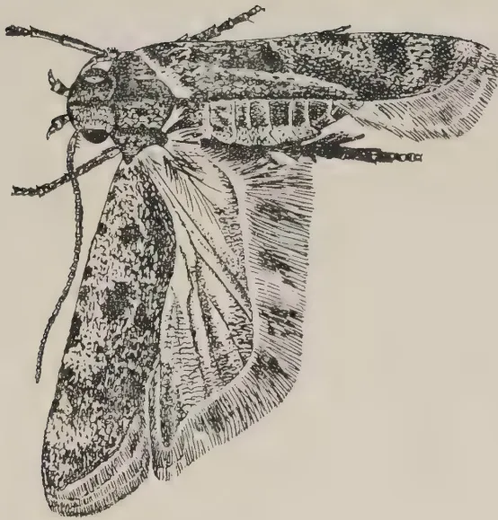
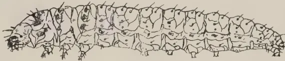
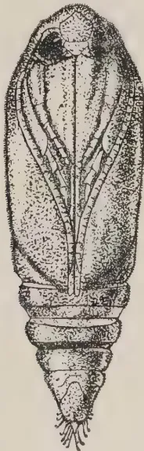
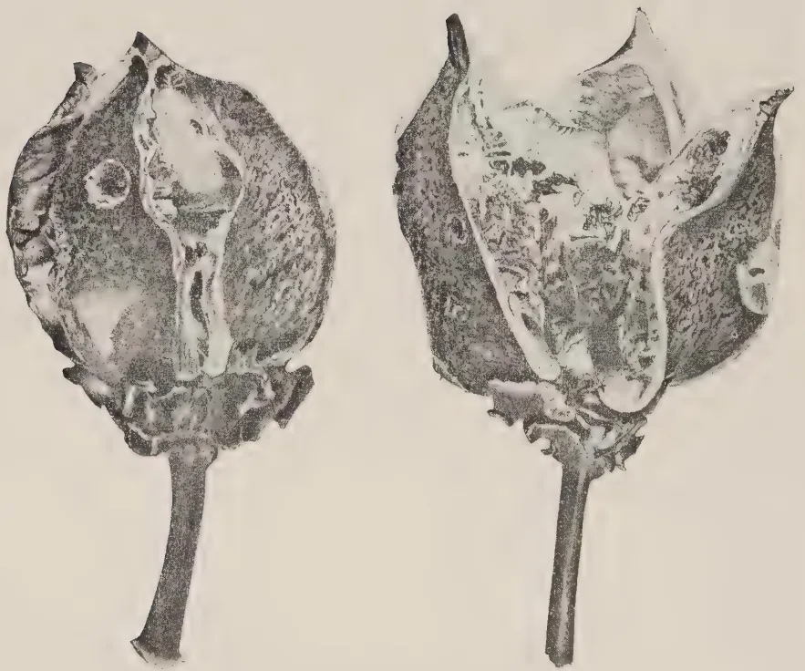
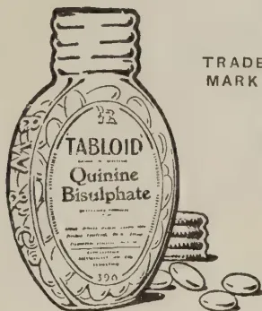
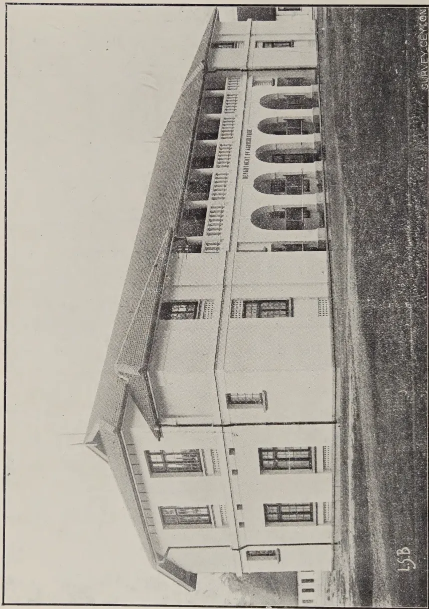

VOL. LXVI.
PERADENIYA, MARCH, 1926.
No. 3.
In the present number of the Tropical Agriculturist are included notes upon a visit to agricultural institutions in India and in another section the report of Mr. G. R. Hilson, Cotton Specialist to the Government of Madras, upon the prospects before cotton cultivation in Ceylon. It is hoped that these reports will be of interest to those desirous of assisting further agricultural progress in this colony.
A brief description is given of some of the Research work which is being carried out by the Imperial Department of Agriculture in India and by Provincial Departments, and special attention was also given to Educational and Co-operative problems.
The greatest success that Agricultural Departments in India have so far secured has been in the provision of improved types of seed. In all provinces this work has been of the greatest value and has resulted in increased crops of a higher grade product and in the improvement of agricultural organization. This organization of seed farms, of seed distribution and of Societies for the Purchase and Sale of Agricultural Implements and crops has involved an enormous amount of labour, but the results have been eminently satisfactory.
Attention is now being directed to cattle breeding—both for draught and for dairy purposes. The Indian agriculturist is dependent for his success upon his cattle, and progress in the improvement of these animals and in their feeding is now being made. Similarly, the dairy problem is being tackled seriously and a satisfactory amount of progress has already been made.
130[MARCH, 1926.Educational matters have not however made the same progress. The Colleges of Agriculture have turned out a number of sound agriculturists, but there is a general complaint that the same class of student is not being secured and that it is often difficult to attract really first class men to professional agriculture. The town-bred student has been found not to have the same sympathy with the rural agriculturist as has his country-bred cousin, and the agriculturists have the greater respect for the man from the rural areas. Some attempts have been made with vernacular middle schools, and in some of those in Bombay success has been achieved. An endeavour is now being made to introduce rural science in all village schools and to give to such schools an agricultural bias.
Co-operation has made progress in most Provinces of India. Primary societies in rural areas are now firmly established and are a real power for good. Attention is now being given to the reduction of mortgages by means of long-term credit. Attempts at the reduction of previous debts in urban areas have so far been unsuccessful in Bombay and special attention is therefore now being given to rural areas. Co-operative mortgage banks are to be started and, in Madras, Government has undertaken to find half the capital for such banks up to a limit of Rs. 200,000. It is strongly held that such banks are only likely to be successful if they are managed on a co-operative basis. State banks are not advocated and Takavi or Government loans for land improvement are now being largely issued through the co-operative movement.
Throughout India one realizes the necessity for an improvement of the economic conditions of the rural areas. The peasant agriculturist cultivates his lands and raises money and food crops. Any change from traditional methods can only be secured gradually. A similar state of affairs exists in Ceylon and little progress is likely to be effected in the drier areas until chena cultivation can be replaced by tillage agriculture. This is the problem that has to be faced in connection with cotton cultivation in the Hambantota district.
MARCH, 1926.]131F. A. STOCKDALE, C.B.E., M.A., F.L.S.,
Director of Agriculture.
In the previous number of the Tropical Agriculturist were included the reports of the Ceylon delegation to the Tea districts of Northern India. After leaving Assam, I had the opportunity of visiting various agricultural institutions in India and the following notes extracted from my official report to Government may be of general interest:—
A careful investigation was made of the work of the Imperial Agricultural Institute, and I am indebted to Dr. Clouston, the Agricultural Adviser to the Government of India, and the staff of specialists at that Station for their hospitality and assistance during my visit.
The main work of this Institute is to establish general principles which can be applied to the different problems of the various Provincial Departments of Agriculture. The Institute itself is divided into the following sections:—
Agricultural under the Imperial Agriculturist
Botanical under the Imperial Economic Botanist
Chemical under the Imperial Agricultural Chemist
Mycological under the Imperial Mycologist
Entomological under the Imperial Entomologist
Attached to the Institute also is the Secretary of the Indian Sugar Bureau and under the general supervision and control of the Agricultural Advisor are the Imperial sugar-cane breeding station at Coimbatore, the Imperial Institute of Animal Husbandry and Dairying at Bangalore, the cattle breeding farms at Karnal and Wellington and the Imperial Institute of Veterinary Research at Muktesar.
The total annual expenditure of the Research Institute amounts to approximately Rs. 700,000.
Agricultural Section.—This section has charge of the farm and the pedigree dairy herd. The farm comprises 1,200 acres of which about 620 acres was under cultivation. 500 acres of this area are unirrigable and 100 acres are irrigated and devoted solely to the production of green fodder for the dairy herd. About 100 acres are devoted to field experiments but the balance of the farm is utilized for maintaining the dairy herd of Montgomery (Sahiwal) and Montgomery-Ayrshire cows and which now number 500. These animals are kept out in the open as far as possible, but receive in the sheds maize silage and oat straw. Berseem (Egyptian clover) is now being largely grown and is irrigated from the river by 3 pumps—1 oil and 2 steam. The cows in milk graze in the Berseem when it is large and they are then followed by the dry cows. (Our trials with Berseem in
132[MARCH, 1926.Ceylon have not up to the present been successful and it is thought that temperatures may be too high. Further trials are however being made and the Pusa methods of sowing and treatment are being tried. At Pusa, Berseem is a cold weather crop). The chief crops on the farm are maize in the hot weather May to August, and dhall, gram and oats in the cold weather. Manurial experiments are being carried out with these crops and the value of green manuring with superphosphate has been clearly demonstrated. Seed selection is carried out and there is a demand for seed maize and oats from the farm. Experiments in conjunction with the Mycologist were being conducted in regard to the selection and trial of varieties of dhall immune to wilt and with the Chemist on green manuring problems. Chilli selection has also been begun on a small scale and sugar-cane trials with improved varieties raised at the sugar-cane station at Coimbatore were being made.
I was particularly struck with the work in the Pedigree Milk Herd. The best yielding Montgomery cows are kept pure, but those giving smaller yields are crossed with Ayrshires. These first generation half-breds give almost double the yield of milk of their parents, but should not be used for breeding purposes for sake of their progeny. After the first generation the results are not satisfactory and whereas a half-bred cow is almost invariably a good animal, the progeny of a half-bred are on the whole poor and not worth their keep. These conclusions are however in my opinion based upon too small numbers and although they may be accepted by the practical man should not prevent further and more extensive trials being made by the Agricultural Departments of India. Exact data regarding the influence of the bull was also shown to me, and the results are of the greatest importance to all cattle breeders. A good bull can improve a bad herd but a bad bull invariably gives inferior milkers. Mr. Henderson stressed the point that the bull is more than half the herd and also the importance of keeping the bull until his progeny had been tested. Pusa has lost several bulls which have given excellent progeny by their being sold from the herd before their progeny had been fully tested. The yields of the pure-bred Montgomeries have been almost doubled in 15 years and no animal giving less than 4,000 lb. per lactation period of 10 months is kept pure. Such poor yielders are invariably crossed. The herd now totals 500 and the milk is disposed of in Pusa and at a Depot opened in the Bazaar at Muzafferpur whence it is transported by motor lorry. The ration of concentrates consists of lb. maintenance ration and 3 lb. for every 3 lb. of milk produced. Milking is done at 11 a.m. and 11 p.m. and delivered at 2 p.m. and 6 a.m.
Botanical Section.—The area of land devoted to the work of the botanist is about 50 acres and is completely under his control. Ploughing is done by iron ploughs and inter-cultivation by means of Planet Junior and spring tooth cultivators. Harrows are also used. The work consists of the selection of pure types and the production by hybridization of high-quality types of wheat, tobacco, linseed, safflower, gram, gingelly, dhall and chillies. Details of the hybridization work with tobacco and of selection work with chillies were taken, as also of the threshing floors which have been made and the storage drums which are used. In chillies only the first year work has been completed. The testing of varieties of dhall for wilt resistance in co-operation with the mycological division was inspected and should prove to be of considerable value if a disease-resistant strain can be evolved.
MARCH, 1926.]133Mycological Section.—The chief work in hand is at present in connexion with the wilt disease of dhall and a particular study is being made of its spread in the soil. Work on sugar-cane mosaic is also in hand and upon other diseases of cereals and ginger. Work has also recently been done on the diseases of potato in Assam and upon a disease of Cinchona. A large herbarium is maintained and list of the contents of the same has recently been published.
Bacteriological Section. Work on the nitrogen fixation in soils is being continued. There appear to be certain factors which may produce a limitation of nitrification. The fermentation of tea was also fully discussed with Dr. Hutchinson who had carried out investigations in Assam several years previously. The problem of green manuring investigations was also fully discussed and details of experimental work on decompositions examined. The preparation of Electrolytic Chlorogen was examined. This preparation is now the standard disinfectant at Pusa and in various hospitals and gaols. It is being used at the Pusa dairy for the washing of udders before milking.
The use of the cinema in agricultural propaganda has been investigated and a number of films have been prepared. I was able to see one such film on Pusa dairy methods and another upon the preparation of silage. The total cost of the outfit and twelve rolls of films amounted to Rs. 6,000. The use of such cinema films in Ceylon by the Agricultural, Sanitary and Veterinary Departments is to be recommended.
Chemical Section.—Nitrification problems are also being investigated in this section particularly in regard to the movement of nitrates in the soil and sub-soil. This work is of considerable interest as it shows that the upward movement of nitrates in the sub-soil is not so great as was generally supposed and consequently considerable losses of nitrates may occur unless root development is deep. The decomposition of green manures under Pusa conditions is very rapid and under favourable conditions taking about a month or six weeks. The use of green manures in Ceylon tea soils was discussed as also the effect of green manuring of paddy soils. It is probable that the effect in paddy soils may be largely mechanical allowing of better root development and of better drainage. Special investigation is also being made of the methods of estimation of available phosphoric acid in soil analyses and work on the qualities of milks from selected cows has also been begun.
Entomological Section.—This section has its work divided amongst a number of assistants who specialize in various groups. Pests of sugar-cane, paddy, cotton and stored grains are receiving special attention, but much of the work is developing along systematic lines. The preparation of coloured plates has been a feature of this section and the work in this direction has greatly improved during the past two or three years. Details of the cost of the production of these plates have been secured.
Post-Graduate Training.—In each section at Pusa a small number of graduates of Indian Universities received specialized post-graduate training. These number from two to four per section and are specially selected for this training in methods of modern agricultural research.
134[MARCH, 1926.The work of the Indian Central Cotton Committee was explained to me fully by the Secretary, Mr. B. C. Burt, and a thorough investigation was made of the Technological Laboratory. The whole object of this laboratory is to test Indian cottons—especially those being produced by the Provincial Agricultural Departments—and an attempt is being made to correlate various factors with scientific data secured in these tests. The laboratory consists of two sections—an experimental spinning plant supplied with standard spinning machinery and a testing section. Special rooms are provided for Chemical, Physical and Microscopical examinations. The results of the tests recently made of Ceylon-grown cotton were fully discussed. The cotton was somewhat irregular in length of staple but resembled a Mississippi cotton which had been examined. Its average length was '99 inch and its general strength was satisfactory.
The work on cotton in India emphasizes the desirability of a policy on single crops when they are of sufficient importance to warrant the full staff. The general mixing of problems with a large number of crops retards progress and the Cotton Committee has already opened two special cotton stations—one in Indore and another in the Punjab and is likely to open up a third in South India.
Agricultural Education and Co-operation were discussed at length with Mr. Burt as he has had considerable experience of both questions. Under Indian conditions agricultural education in the vernacular was required, with a special higher training course in English extending over 4 years if the public demanded it. Several instances of agricultural co-operation having been started and fostered by agricultural officers were quoted and it appeared that where the needs of the people in rural areas—dependent as they are solely upon agriculture—are looked after by trained agricultural officers most successful results in co-operation have been secured. Agricultural development and co-operation must go hand-in-hand and the general policy should be controlled by one Department. Otherwise it is evident that the credit side of co-operation is likely to be unduly emphasized and the organization, along business lines, of co-operative buying, selling or supplying agencies neglected. The agriculturist is more often in need of the latter form of organization, and it is only when he obtains it that his economic conditions improve.
Loni Vernacular Agricultural School.—The cost of the buildings at this school was about Rs. 25,000. The cost of the school is annually about Rs. 9,000 in addition to the cost of the staff which consists of a Headmaster (a Graduate of the Agricultural College), a Trained Teacher from the Education Department and a Field Officer. This staff is responsible for all the work of the school whilst the students have to do all the work of the farm—the only paid labour being one man for each pair of bullocks. This provision is made to ensure works being continued during the holidays. The receipts of the school amount to something over Rs. 6,000 per annum. The education is free and Government allows Rs. 10 per mensem towards the boarding expenses of the boys. The total area of the cultivated land of the farm is 22 acres and the syllabus includes reading and writing, agriculture, nature study, agricultural arithmetic and surveying, physical geography and in the last year subsidiary farm industries, sanitation, rural legislation and local
MARCH, 1926.]135government. The students must be between 14 and 17 years of age and must be the sons of landholders owning at least 30 acres of dry land or 10 acres of irrigated land. The aim of the school is to train the sons of landholders who will return home for work upon their fathers' lands. The course is a two years' one and at the time of my visit there were 43 students at the school of which 15 were in the second year. Each student has a plot of his own and he may dispose of the crops for his own benefit. The crops grown on the farm are sugar-cane, millet, cotton, ground-nuts, gram, dhall, etc. An oil engine drives a chaff cutter and a small grinding mill and this is looked after by the students in turn.
A class of teachers similar to the class at Peradeniya was being given a one year's practical course for those elementary schools in the Presidency which have an agricultural bias. The work in these schools is somewhat on the lines of the school garden work in Ceylon, but actual school gardening is difficult in Bombay owing to water difficulties.
There are six vernacular agricultural schools in the Presidency and some are doing good work. The character of their work is stated to be variable, but they are all under one Inspector who visits the schools at regular intervals and stays about a week at a time during each visit. He also has charge of the inspection of the agricultural work in these schools which have been given an agricultural bias and was for several years the Headmaster of one of these Vernacular Agricultural Schools.
There is no connexion between these Vernacular Agricultural Schools and the Agricultural College at Poona the class of work done in each being totally different in character.
Sugar Experiment Station.—This Station, also known as the Mangiri Farm, was started in 1894 when a plot of nine acres was selected for the study of a more economic system of manuring and irrigating sugar-cane in the canal section of the Deccan. The Experiment Station now consists of 62 acres and is equipped with a three rolled mill driven by an oil engine and the juice is made into gul (jaggery) in large, shallow open pans. The rotation consists of sugar-cane, then jaur (millet) and then sunn hemp which is ploughed in. The planting of the cane is done in February and the reaping the following January. Juices are rich—18° Brix—and the purities are high (90% and over). Cane crops amount to 30-40 tons of cane per acre and an extraction of 72% is obtained in the mill. The juices are not clarified and each pan gives a break of about 1,300 lb. which is run into moulds about 6 inches across and 5-6 inches deep. All the sugar-cane is irrigated and the payment for water amounts to Rs. 57 per acre per annum, but will be increased to over Rs. 60 per acre per annum from the present year. Sugar-cane cultivation under irrigation is the most profitable cultivation in the Deccan, and at present the prices for jaggery are at a higher parity than the prices for sugar. Various types of mills, pans, and furnaces have been experimented with and recommendations made to cultivators in consequence. At the present time the following experiments are being carried on :-
The work of the Station is being well carried out, but it is possible that too large a variety of canes is being experimented with and a more rigid selection will have to be made in order to reduce numbers to reasonable limits.
The Agricultural College, Poona.—At this college a number of students from Ceylon have been trained and at the time of my visit there were eleven Ceylonese students under training. I inspected the work of the college carefully and discussed with the Ceylonese students the work that they were doing. I saw the students at work on ploughs and on plots in the fields doing insect and disease control work, ploughing with bullocks and at work on individual plots. The main crops consisted of cotton, jaur, sugar-cane, onions, chillies and dhall. The stock of standard implements is good and there is also a good engineering workshop for repairs to tools and implements and in this shop the students receive instruction. Horticultural work with guavas, grapes, figs and oranges were also carried on. No selection work was being done and there are no facilities for paddy work. Work with paddy can be done only during the last term by the spending of week-ends at the paddy station on the West Coast. The lecture rooms and laboratories for agriculture, chemistry and botany were adequate, but it would appear that little Physics is now being done and a change in the large physical laboratory is being made. The Agricultural Chemist was doing research work on nitrification and also has annually to make a large number of analyses of manures (cakes) and irrigation and drinking waters for cultivators. These analyses are all made free of charge.
The curriculum of the college appears to be drawn up on sound lines. I personally would like to see it made more agricultural and less help given by the college to the students in the working of their individual plots. The crops grown are not those usually cultivated in Ceylon and the general climatic and agricultural conditions are very different from those of Ceylon. About 700 students have completed courses at the college and most of these look for salaried appointments in the Agricultural, Co-operative, Educational and Revenue Services. Several are now finding employment as Science Teachers and supervisors of agricultural purchase and sale societies and as advisers to large land owners. The Agricultural Department takes in seven as probationers every year. This probationary period is for two years and they are attached to various officers of the Department for varying times during this period. They receive as probationers Rs. 100 per mensem and if appointed upon the staff of the Department receive Rs. 105 rising to Rs. 300 per mensem which is the graduate scale for all Government Departments. Officers of the Department are after satisfactory service eligible for selection for promotion to the higher service of the Department, and later on to the Imperial Grade.
Agricultural Dairy, Poona.—This dairy was in process of re-organization. In the past there appears to have been a complete lack of object and the expenditure on it was greatly in excess of its revenue. It has been decided to put the dairy on a commercial basis and its revenue at the present
MARCH, 1926.]137time is covering expenditure. The sheds are of the simplest and the milk is sold in Poona at the equivalent of 20 cents per lb. Scindi cows and Gujerat buffalos are kept. The greatest demand is for buffalo milk for the purpose of making curd. The Scindi cows average 15 lb. of milk per diem and the best milkers give 23 lb. shortly after calving. The food consists of 45 lb. per diem of jaur straw or chaff and concentrates according to the milk yielded with a maximum of 7 lb. of concentrates per animal. The cost of feeding approximates very closely to the costs of feeding the Peradeniya Farm School Dairy herd. It has been found at Poona that jaur is better for milk production than guinea grass. Lucerne also grows well at Poona and gives heavy crops. It is regularly irrigated and can be cut every 4-6 weeks.
Discussions were had with Dr. Mann on Agricultural Education and Demonstration Farms. He is a firm believer of an agricultural bias being given to all elementary schools in village areas. He thinks well of some of his vernacular agricultural schools, but states that they are limited in their scope. Small agricultural schools or schools provided with small areas of land could not be made to pay their way unless they were so situated that they could sell market garden produce at good prices. In some parts of the Bombay Presidency the growing of vegetables yields Rs. 1,000 per acre and in these areas small agricultural schools could be made to be profitable. Demonstration farms are causing some anxiety as several of them have served their purpose and cannot be scrapped owing to the capital expenditure which has had to be made in their equipment. Dr. Mann favoured experiment stations for definite problems and for separate crops and when the results of experiments had been secured of demonstrations upon the growers' own lands.
* Co-operation in Bombay.—I had a discussion with the Assistant Registrar on co-operation. Formerly the Co-operative and Agricultural Departments were under one head, the Director of Agriculture, but in 1918 a separation was made. At the present time all non-credit work (seed supply societies, agricultural purchase and sale societies, etc.) is under the control of the Agricultural Department—the audit of the accounts of such societies being prepared by the co-operative staff. All co-operation propaganda work in the districts is done by agricultural officers, as co-operative officers have little or no time for propaganda. Their time is fully taken up with inspection and credit. There are 4,000 societies in all in Bombay and there are seven Assistant Registrars and one Inspector and one Auditor for every 120 societies. Loans from Government funds for land improvements (Takavi loans) to the extent of Rs. 300,000 are being given through the medium of Co-operative Societies. In practically every case no loan is given until a record has been obtained from an officer of the Agricultural Department that the improvement proposed is possible and is likely to be profitable to the proposer. The establishment of mortgage land banks is under consideration and for the work of such banks assessors will be required. All previous attempts to redeem previous debts in urban areas have been failures and therefore any result of the present deliberations will be directed to the rural areas, and the business will be done by the district banks and financed by the provincial bank organized under the co-operative movement. It is likely that repayments in 15-20 years will be adopted.
Visits were paid to the Empress and Bund Gardens. At the latter the Bougainvilleas were beautiful, as also a pink Poinsettia.
138[MARCH, 1926.This Institute owes its origin to the munificence of the late Mr. Tata and to his sons Sir D. T. Tata and Sir R. J. Tata. The students here now number between 60 and 70. They are all graduates of Indian Universities, and selection for admission to the Science Institute at Bangalore is very carefully made by the Senate. The Departments at the Institute are at the present time (1) General and Organic Chemistry with a Professor for Inorganic and another Professor for Organic Chemistry, (2) Department of Biochemistry and (3) a Department of Electric Technology.
The course of training in Research work is for 2 years in the Chemical and Biochemical Departments but is for 3 years in Electric Technology—one year having to be spent in an engineering college. I was taken through all Departments by Dr. M. O. Forster, the Director of the Institute and was shown the work in hand. I was also fortunate in being able to attend a colloquium on Plant Alkaloids. Members of the staff and students took part in this discussion. The Organic Chemistry section has carried out a considerable amount of work on essential oils, upon plant alkaloids and has also begun work on drugs used in native medicines. The Biochemical Department is at present chiefly engaged upon nitrification and sewage disposal and upon the problems involved in the culture of lac. The different species of lac insect are being investigated and their action on various hosts. Acacia Farnesiana has been found to be a very useful host for all species and some species can be induced to go from one plant to another if an intermediate generation is bred upon this Acacia. Dr. Norris considers that there is a future before lac cultivation and plantations are at the present time being made in Behar. A separate Lac Research Institute is being established at Ranchi by the Indian Lac Association by means of a special Government collected cess upon all lac exports. The Department of Electric Technology is specializing upon Hydro-Electric problems and upon wireless in anticipation of a considerable extension of the demand for fully trained engineers with Hydro-Electric or with wireless knowledge. Graduates of the Colombo University College desirous of securing post-graduate training in Applied Chemistry, Biochemistry or in Electric Technology could not do better than proceed to the Science Institute at Bangalore and I was informed that the Senate might be prepared to consider the admission of a limited number. The cost of fees at the College and of boarding amounts to about Rs. 70-00 per mensem. I also inspected the Activated Sludge system of sewage disposal which has been installed at this Institute. It has worked throughout quite satisfactorily and appears to be quite suited for adoption under tropical conditions. Full particulars were secured with a view to seeing if a similar system could be installed at Peradeniya—where the Sanitary problem is becoming more and more complicated with the increase of the Headquarters staff of the Department.
Imperial Institute of Animal Husbandry and Dairying.—This Institute now gives a two years' diploma course in Dairying and Animal Husbandry. It was an old Military Farm devoted to crossing Scindi and Montgomery cows with Ayrshires up to what are known to cattle breeders as or ths Ayrshires. This experiment was not a success and the policy now is to get back to more blood from Indian breeds. The Ayrshire is recommended by
MARCH, 1926.]139the Imperial Dairy Expert for crossing with Indian cattle. First crosses with Ayrshires give double the quantity of milk of the mothers and the bulls are good cart animals. It has however been proved that they should not be used for stud purposes. The second cross produces smaller animals of a dark red colour and they generally are not satisfactory. A small herd of pure bred Scindi animals is also being kept at this Institute and attempts are being made to improve their milking capacity by selection. The milk at this Institute is pasteurized and sold in Bangalore at annas per lb. During the war period this pasteurized milk was being sent quite satisfactorily to Madras and in fact pasteurized milk is being sold in Calcutta and Bombay from another cattle-breeding farm situated at Karnal in the Punjab. There is no doubt that much could be done in Ceylon by the establishment of dairies in rural areas and then pasteurizing the milk before it is sent to the urban areas for distribution. A beginning in this direction has already been made, but much greater progress is possible and there is no reason why Ceylon should continue to remain one of those countries with an insufficient and indifferent milk supply in its towns. Milk is also separated and cream sold in small containers similar to those used in Europe. Butter and Cheddar cheese are also made, and both are of excellent quality. The feeding of the cows consisted of 40 lb. of grass or silage per diem and 4 lb. of concentrates as a maintenance ration and 1 lb. of concentrates per 3 lb. of milk produced. The silage is made in pit silos and at the time of making the silage plenty of water is added to it. A much better quality silage is prepared if it is thoroughly damp when put into the silo. New buildings have also been erected to serve as type plans for the students and for those interested in dairying. At this Institute the Imperial Physiological Chemist is conducting feeding experiments and a study of the rations for milk production and of the nutrition of young dairy animals, but he was absent at the time of my visit and therefore I was unable to discuss with him personally the results obtained up to date. The work for the students at this Institute is essentially practical and I was informed that a limited number (one per annum) of Ceylonese students could be received if they were recommended by the Department of Agriculture.
This forms the Headquarters of the scientific staff of the Madras Department of Agriculture. I was met here by Mr. Hilson, the Acting Director of Agriculture, Madras, and by the Acting Principal of the College.
The organization at Coimbatore comprises the Agricultural College with its Central Farm and consisting of sections of agriculture, botany, entomology, mycology, agricultural chemistry and veterinary science and the Research side consisting of sections for mycology, entomology and agricultural chemistry and specialists for cotton, millet and paddy respectively.
New buildings costing Rs. 375,000 are in course of construction for the teaching side of the college and then the present buildings will be handed over to the Research side. The new buildings provide accommodation for a Principal and Chemical, Botanical, Agricultural and Veterinary sides and will accommodate 150 students.
140[MARCH, 1926.Research Work.—The Entomological work in hand at the time of my visit was in connection with the parasitic control of the coconut caterpillar. A serious outbreak of this pest at Mangalore which had resulted from an introduction from Travancore was checked in one year by means of parasites. The Spodotera paddy pest was also being worked upon, and the outbreak of mealy bug on pepper after spraying the pepper with Bordeaux mixture for the pepper disease was discussed. The poster work for propaganda work regarding the control of pests was being well done.
In the Mycological division work was being done on Palmyrah bud-rot, coffee die-back and areca disease. The general outline of work in hand was rather indefinite but the illustrative and propaganda side of the work was being extremely well done. In the chemical division analyses of soils and manures for estates was being carried on at fees which were extremely reasonable. Work was also being done on nitrification of manures. The nitrification of horn contrary to expectation has been found to be rapid. The nitrification of ground nut cake is slightly more rapid than that of castor cake and is generally complete within three months. With Mahua cake there is practically no nitrification at all and in consequence it is valueless as a manure. The use of cynamide as a paddy manure has been investigated and it has been found that it can be used safely if applied at least 24 hours before transplanting and at least 7 days before broadcasting seed. The best results have been secured with paddy with green manures and phosphates but sulphate of ammonia has also given good results. The Adco process was being examined. Paddy straw does not break down very well under this process as it is too silicious.
The Cotton Specialist is in charge of all the cotton breeding and selective work. He has complete control over the cotton station which comprises 28 acres with 3 pairs of bulls. A field laboratory has been equipped on the station and here all the results of different cottons are tabulated and analysed. The average rainfall is 26 inches and this falls in September-October, early November with light showers in April and July. Cotton at Coimbatore is sown in September and irrigation given if necessary. The crop is harvested in February-March. The land is then ploughed and fallowed from May-June to early September. It is then ploughed again and prepared ready for sowing. Cotton is followed by a cereal crop (cholam) and this by cotton and this again by sunn-hemp which is ploughed in green. Selections and crossings of Cambodia cotton are made and several of the types sent out from Coimbatore have proved to be considerably superior in point of yield and general vigour than the ordinary strains and now cover a very considerable area of the cotton of the Madras Presidency. The cotton station at Coimbatore is irrigated by means of an oil-engine pump from a large rectangular well. Cotton at Coimbatore is seriously affected by the stem borer and the spotted boll worm. Smooth leaved types of cotton cannot be grown owing to the prevalence of a leaf-hopper.
Cotton forms one of the principal money crops of the ryots of the Madras Presidency and now covers 2,300,000 acres of which 265,000 acres are under improved types. The District Agricultural Officers secure their supplies of seed for trial by the growers from the Central Cotton Station at Coimbatore and make multiplications upon the various district experimental farms.
MARCH, 1926.]141The appointment of a millet specialist has been sanctioned only recently and the millet station has only been opened for one year. It consists of 35 acres with 5 pairs of bulls and has a contingency vote of Rs. 5,000. The principal work at present is concentrated on cholam. A collection of the different types from all over the Madras Presidency has been made and it is thought that not less than 150 different types will be isolated. Crossings in millets are fairly common and the segregation of characters is being studied. In the Madras Presidency the looser headed types of millet are the most common as the close headed types so common in Northern India mildew badly in all districts when there is rain or mist during the flowering and ripening periods. The black and red types are the more hardy, but the white kinds are the better appreciated by consumers and are grown in those areas where they will thrive. Work has also been begun with ragi (kurrakan) and with Italian millet (Tenai or Tanahal). The station is irrigated by means of a well and a 5-inch centrifugal pump, all irrigation main channels being in cement and provided with iron sluice gates. A field laboratory and store have been erected and housing accommodation provided for the staff of the millet specialist. All buildings were erected by the millet specialist according to plans sanctioned by the Public Works Department and this procedure has resulted in the full equipment of the station with its necessary buildings in the shortest possible time. The total staff consists of the millet specialist, 2 assistants, 2 Field men, one clerk and one draughtsman.
The paddy station consists of 28 acres of land with 5 pairs of bulls with a contingency vote of Rs. 6,000. This station is under the Paddy Specialist and three other paddy stations are now in course of being established in other parts of the Presidency. Pure line selection work and hybridization are being carried out. One crop per annum is grown and irrigation is done by means of a well and pump. All the paddy is transplanted at 6 inches apart and a space of 1 foot is left between each test lot. Comparative tests are made in strips 40 x 40 feet and are repeated 8 times. Outside rows of each strip are discarded as they have been found to give 25% more than the inside rows. Uniform manuring with castor cake is done and on the Station manuring with green manure is not carried out owing to the difficulty of spreading the green manure evenly. The inheritance of characters has been worked on and some useful information secured. This work at present has not much practical value, but it is information that must be secured before satisfactory hybridization work on scientific lines can be conducted. Several pure lines have been isolated which are being appreciated by growers and increased yields of 15-25% over comparatively large areas have been recorded. It is estimated that it takes 7-8 years before any pure line can be recommended with confidence and the need for small test stations in different paddy growing tracts under the control of District Agricultural Officers have been greatly felt, as it has been recognized that it is impossible to recommend to growers any type for a particular area until it has been tested there.
It is possible that a specialist for pulses will be approved by the Madras Government at an early date.
The Imperial Sugar-Cane Station of the Government of India is also situated at Coimbatore and here the raising of new types of sugar-cane is undertaken by the Imperial Sugar-Cane expert.
142[MARCH, 1926.Agricultural College.—Students must have matriculated in Madras University before they are admitted to the College and the course will be of University Standard for the B.Sc. (Agriculture). It has been thought advisable to require this higher standard of general education and to dispense with the lower diploma courses. The field work of the students at the Agricultural College is done upon the Central Farm and here particular attention is paid to the rotation of crops. The Veterinary division has charge of the instructional dairy and at this 30 cows in milk are maintained. These are cross-bred Ayrshire Scindis and some pure Scindis. The lay-out of this dairy is not as good as others I saw in India and the general policy of it is not well defined. The milk is all sold fresh at Coimbatore. Poultry are also kept for instructional purposes—the breeds kept being White Leghorns, Rhode Island Reds, Light Sussex and Andelusians.
I discussed with the Acting Director of Agriculture and with the Veterinary Surgeon at Coimbatore the work of the Department at its Cattle Breeding Farm at Hosur. Time did not however permit of examining the work of this breeding station in detail.
The general arrangements for the accommodation and teaching of students at this College are very good, although I am rather inclined to the view that the teaching in some respects may be too theoretical. When the new buildings are opened I was informed that it might be possible to receive students from Ceylon provided that their educational qualifications are equivalent to those demanded for entrance. The number of students at Coimbatore has fallen after the principal demands of the Agricultural College were filled, but I was informed that there is now some demand from private employers for men trained at the College. The general type of student is not thought to be as high as it used to be and 14 vacancies in the Department remain unfilled at the present time owing to first class men not being available.
Work of District Officers.—I discussed in detail with the Acting Director of Agriculture, Madras, the work of District Agricultural Officers particularly in regard to propaganda work, the work of Experimental Farms and of Demonstrators, and to the organization of district and manure stores and implement supply agencies. Agricultural middle schools in Madras have not been successful and a report on these schools has been prepared for the Indian Board of Agriculture. The work of the Madras coconut experiment stations was discussed and I gathered that the cultural work was satisfactory and giving interesting results, but little headway was being made with the manurial experiments.
Visit to Registrar of Co-operative Societies, Madras.—I discussed many co-operative problems with the Registrar of Co-operative Societies. He informed me that long term loans to land owners through Revenue officers (Takavi loans) have never been popular in Madras and rarely did much good. The loans were invariably discounted and the cultivator had strong objections to submitting his land and subsequently the operations on his lands to frequent inspections. The inspections which were made by Government officers while the works were in operation were particularly resented.
Rural co-operative societies were now very firmly established and were a power for good. Federated Unions now provide the supervision and the
MARCH, 1926.]143major portion of the propaganda work—the co-operative department providing inspection and audit. Every society is inspected at least twice a year and one inspector is expected to deal with 100 societies although it is being found that 60-65 is all that he can inspect satisfactorily. The District Central Banks depend entirely upon the audit inspections for guidance. They will usually make a loan of up to th of the unencumbered credit sheet of members, but less than this when the Society is newly formed. The credit sheet is recognized as a guide only and no loan is given until a report has been furnished by the Co-operative Inspector and in fixing the loan which a society may be granted such factors as industry of the members, nature of crops grown, average yields of crops, whether seasons are reliable or not and whether failure of crops are common or not are taken into consideration. The credit sheet has to be revised whenever a new loan is applied for and no second loan is made until after a further detailed inspection has been made by the Inspector. Limits are also put upon the borrowing power of any member—particularly in the initial stages in order to safeguard against excessive borrowing and against a few members gaining preferential treatment over the majority. The general average of the limit is Rs. 500. District Central Banks cannot satisfactorily be entrusted with the work of inspecting Rural Societies as townspeople, although very useful in these urban financing agencies, command no respect amongst the rural cultivators. Central Banks must therefore depend upon the Registrars' Staff for information regarding the credit worthiness and the general working of the rural societies.
Some rural societies give long term loans but the funds at their disposal are generally not adequate to provide the funds required. These long term loans issued by Societies are generally for terms of 7 years and as there has been a demand for loans upon the mortgage of lands this matter has been very thoroughly investigated.
Model by-laws for co-operative land mortgage banks have been drawn up and approved by Government. The object is to redeem the mortgages of agricultural land, as it is being found that the cultivators are unable to reap the full benefits of co-operation on account of their being seriously encumbered with mortgage debts. The Government has undertaken to take up half the debentures in these Banks to the extent of Rs. 200,000 provided that an equal amount of debentures are taken up by the general public. The Government debentures carry interest at 60/o while the debentures issued to the public carry interest at 70/o. It is expected that 3 such banks will be possible and probably at a later date two others may be formed. The Registrar informed me that arrangements had practically been completed for the formation of one bank. The idea of this bank is that a number of land-owners in a specified area, who have mortgaged land to money-lenders, to combine together to form a co-operative land mortgage bank. They will then re-mortgage their lands to the bank which will proceed to issue debentures on the security of these mortgages. The maximum period for which the bank will make loans to its members is 20 years. The Banks will be managed by a Board of Directors and they will appoint a Trustee whose function it will be to see that the Bank fulfils its obligations to the debenture holders. This Trustee at the commencement is specified as the Registrar of
144[MARCH, 1926.Co-operative Societies or someone selected by him. After the Banks have worked for some time it is proposed to select a non-official to take the place of the Registrar of Co-operative Societies as Trustee.
A copy of the model by-laws for these Co-operative Land Mortgage Banks has been obtained for the information of Government.
The Madras Central Bank is now an Apex bank and Government has agreed to allow local authorities to invest their surplus funds in this Bank. Certain Trust funds are also allowed to be deposited as well as Railway Cess Funds. The individual members in this Bank are gradually being reduced as it is desired to make it as co-operative as possible and reduce the number of individual members to about 100. These are required for the proper provision of financial control and for general efficiency.
The vitality of seeds can now be determined within twelve hours, according to the Boyce Thompson Institute for Plant Research, at Yonkers, New York, U.S.A. The prolonged and costly method of determining by germination, whether seeds are dead or alive may be supplemented or displaced, as circumstances indicate, by quick test, resulting in safe seed buying and more certain results in planting. The uncertainty of seed purchases in the past, has been a sore point with the planter. With no way of detecting good seed from bad, to say nothing of intermediate quality; except by the slow germination test, the farmer's or nurseryman's investment in time and labour, as well as the initial purchase, has often been a sort of lottery.
The New York World states that at the laboratories of the Boyce Thompson Institute, under the supervision of the Director, Dr. William Crocker, Prof. Wilmer E. Davis, of the Kansas Agricultural College, a visiting investigator, has developed such a method, based on the catalase activity of seeds. This being interpreted means that a living, vital seed produces a substance known as catalase, which has the property of breaking up peroxide of hydrogen into water and oxygen, with the foaming noticed when peroxide is poured on a cut or wound. In dead seeds, however, the catalase may still be active but is more easily disorganised. Herein lies the distinctive factor. Live seeds soaked in water at 126 deg. F. for two hours (or for twelve hours at 90 deg. F.) will still be active under the catalase test; but seeds that have been injured by frost, heat, or age will show greatly decreased activity if any. Thus a measure of the vitality of the seed is accurately and quickly established.
By another discovery, it is now possible to curtail the period of dormancy in live seeds and force them into growth much more promptly. Seeds that normally require several years to germinate (for example the rose family including the peach and apple), will do so in four or five months if kept at a constant, low temperature (about 41 deg. F.) This is of special importance to rose growers who might otherwise wait and work, for five or six years before finding out the results of experimental hybridising. Such seeds formerly sown in beds, and subjected to the seasonal variations in temperature were alternately awakened and put to sleep, to the nurseryman's loss. — Indian Scientific Agriculturist, Vol. VII, No. 2.
MARCH, 1926.]145G. R. HILSON, B.Sc.,
Cotton Specialist.
The following report submitted by Mr. G. R. Hilson, B.Sc., Cotton Specialist to the Government of Madras, whose services were loaned to the Government of Ceylon to report on the prospects before cotton cultivation in Ceylon, is published for general information:—
I arrived in Peradeniya on the 24th December, 1925, and between that date and the 15th January, 1926, made two separate tours through the actual and possible cotton growing tracts. Each of these tours I have dealt with separately and have made separate recommendations in each case.
In essence the problem in both tracts is the same. In the one case the soil is heavier and the rainfall lower. In the other case the soil is lighter and the rainfall heavier. In both cases, as in other cotton growing countries there is the possibility that rainfall will be in excess or deficit or come at the wrong time, and in consequence the yield or the quality of the crop will be poor. It then becomes a question of determining how often on the average a good yield can be expected. This can be done by growing the crop for a succession of years, and keeping a careful record of the behaviour of the crop each year. It is essential, however, that the results should not be vitiated by failure on the part of the human factor. Every advantage should be taken of rainy and fair weather between crops to get the land cleaned and to prepare it for sowing as soon in September as the rains will permit, and every opportunity should be taken to keep weeds down while the crop is growing.
The problem of cotton growing is however only part of the bigger problem of how to wean the cultivator from chena cultivation and induce him to a more permanent system of land tenure and a sounder system of agriculture. Cotton growing is a means towards this end. A sound system of agriculture will increase the chances of success of cotton, but the failure of cotton need not do more than delay the introduction of a sound system of agriculture.
It seems to me therefore necessary, in discussing this question of cotton growing, to give some consideration to the wider problem of which it forms a part.
146[MARCH, 1926]The first point to be determined is the minimum size of a holding. Where cattle can be kept, as they can here, it is unsound not to use cattle for draught purposes. With a system of agriculture depending on rain-fed crops such as is contemplated there should be not less than 10 and not more than 15 acres actually under the plough for one pair of bullocks. Again, where draught animals can be bred, as they can here, it is unsound to depend upon another country to supply them. It is equally unsound to depend upon a communal area upon which to graze breeding stock. To this area of 10 or 15 acres must therefore be added another area upon which to graze a cow and its calf. Again, in view of the fact that as the land becomes occupied the area under jungle will decrease, and with it the supply of fire-wood, provision must be made for each cultivator to grow his own. The area must in fact be big enough to provide food for the cultivator and his family, fodder for his cattle, space for his cattle to move in when the cultivated land is under crop, fuel and a reasonably large enough area under a money crop. From what I have seen and heard of conditions here, I should put the minimum area at from 20 to 25 acres.
The next item for consideration is the supply of drinking water. It is very much better that each family should live on its own holding. This is not likely to happen unless there is a supply of water on or very near the holding. Information on this head is at present meagre, the point needs investigation.
Lastly come the conditions upon which the land should be held. From what I have seen of conditions in Madras, I would suggest that it would be advisable to make it impossible for the cultivator to alienate his holding or on his death to divide it up among his family into units smaller than 20 or 25 acres.
To attempt to introduce this system of agriculture by allowing the cultivator to take up the full economic unit at once would be hazardous. It would be better to move more gradually. Instead of giving permits to cultivate a chena for one year, the permits should be current for a longer period on the condition that the area was cropped in rotation and on the understanding that if the cultivator worked this area properly he would be allowed to extend it later. Such areas of chena cultivation should then be so selected that it would be possible gradually to work up to an area of 20 to 25 acres in one block.
27-12-25.—Peradeniya to Bandarawela—by train
28-12-25.—Bandarawela to Badulla—by road
do Badulla to Meegahakiula and back
29-12-25.—Badulla to Kalmunai via Bibile and Batticaloa
30-12-25.—Kalmunai to Haputale
MARCH, 1926.]14731-12-25.—Haputale to Hambantota via Madampe and Embilipitiya
1 & 2--1-26.—At Hambantota
3-1-26.—Hambantota to Matara via Tangalle, Beliatta and
Dikwella
4-1-26.—Matara to Peradeniya—by train
Plots of cotton and chena cultivation were inspected at Meegaha-
kiula, Bibile, Godakawela, Embilipitiya, Lyangahatota, on the experimental
station at Ambalantota, in villages in the neighbourhood of Ambalantota but
off the road, and on the road between Ambalantota and Tangalle.
Where the cotton had been sown early and had not suffered too
much from the competition of weeds the growth made and the promise of
crop shown can be considered satisfactory, even in those cases where cotton
had followed cotton. I was favourably impressed by the appearance of the
ordinary chena crops,—maize, ragi, Italian millet, green gram, tomates,
chillies and gingelly, particularly the last named which was better than I
have ever seen it in Madras. I was also impressed by the fact that after chena
cultivation for one year the land very rapidly became covered by a luxuriant
growth of weeds. This, I think, is a definite indication that if properly
managed the land is capable of being cropped every year. The belief that
this land can be cropped once only in 6 or 8 years lies I think in the fact that
the soil is so good that after one year's cultivation the weed growth becomes
very abundant. Therefore, until the heavier scrub growth has killed out the
weeds which takes a few years, the cultivator can do nothing with the land.
The land is not intrinsically poor.
In most of the plots inspected whether the crop was cotton or the
ordinary mixture of chena crops the soil was examined by digging one or
two holes to a depth of about 2 feet. Except near the rivers where the soil
was stiffer it was of a free working texture. In all cases the soil gradually
merged into a sub-soil of a distinctly clayier nature. This clayey sub-soil
will prove a blessing or a curse depending upon the crop cultivated and on the
quantity and incidence of the rainfall. In one case where the soil was
obviously water-logged and the cotton crop was obviously suffering from an
excess of moisture, inspection revealed the presence of this clayey sub-soil
near the surface.
It may be taken that the soil is suitable for the cultivation of cotton.
Whether the crop will yield satisfactorily or will not however depend on the
management of the land and on the quantity and incidence of the rainfall.
Rainfall.—The rainfall records of the various stations near plots
inspected in the areas which appear suitable for cotton are tabulated below.
If the present water-logged condition of the level tract of country on the East
coast from Batticaloa southwards through which I passed is typical of that
area at this time of the year, I do not think it is suitable for growing cotton
and have therefore ruled it out of count.
148
[MARCH, 1926.
| Average of | Taldena | Bibile | Godakawela | Embilipitiya | Lyangahatota | Mamadola | Amalantota | Hambantota | ||||||||
|---|---|---|---|---|---|---|---|---|---|---|---|---|---|---|---|---|
| 25 yrs. Ins. |
Days. | 24 yrs. Ins. |
Days. | 11 yrs. Ins. |
Days. | 9 yrs. Ins. |
Days. | 11 yrs. Ins. |
Days. | 30 yrs. Ins. |
Days. | 3 yrs. Ins. |
Days. | 56 yrs. Ins. |
Days. | |
| April | 4.25 | 7 | 5.09 | 10 | 9.28 | 16 | 7.54 | 12 | 4.83 | 10 | 5.29 | 9 | 1.77 | 4 | 3.29 | 8 |
| May | 3.04 | 5 | 2.34 | 6 | 5.52 | 11 | 3.04 | 8 | 2.43 | 7 | 3.10 | 8 | 3.96 | 5 | 3.15 | 8 |
| June | 1.16 | 2 | 1.06 | 2 | 6.87 | 20 | 1.91 | 6 | 1.76 | 8 | 2.78 | 9 | 2.97 | 8 | 2.38 | 9 |
| July | 1.49 | 2 | 1.81 | 3 | 6.42 | 19 | 3.30 | 8 | 2.99 | 7 | 2.27 | 7 | 3.87 | 7 | 1.78 | 7 |
| August | 1.93 | 3 | 3.01 | 4 | 4.45 | 14 | 1.71 | 5 | 0.94 | 3 | 1.27 | 4 | 0.62 | 6 | 1.21 | 6 |
| September | 2.83 | 5 | 4.36 | 6 | 6.27 | 15 | 2.84 | 16 | 2.80 | 7 | 2.83 | 8 | 4.97 | 11 | 2.41 | 8 |
| October | 10.67 | 14 | 11.40 | 15 | 9.25 | 16 | 9.75 | 14 | 6.94 | 12 | 6.28 | 12 | 4.83 | 9 | 4.85 | 11 |
| November | 11.35 | 15 | 12.38 | 16 | 11.83 | 19 | 8.88 | 14 | 8.43 | 15 | 6.89 | 13 | 5.63 | 9 | 6.76 | 13 |
| December | 16.47 | 17 | 14.73 | 16 | 8.37 | 15 | 8.84 | 13 | 6.53 | 12 | 6.90 | 11 | 3.52 | 7 | 5.42 | 10 |
| January | 15.79 | 13 | 14.86 | 14 | 5.33 | 11 | 3.68 | 8 | 3.14 | 8 | 3.59 | 8 | 2.66 | 6 | 3.38 | 7 |
| February | 4.17 | 5 | 4.56 | 6 | 2.91 | 5 | 2.32 | 3 | 1.20 | 4 | 2.00 | 4 | 2.03 | 2 | 1.43 | 4 |
| March | 3.77 | 6 | 5.07 | 7 | 10.89 | 14 | 7.87 | 11 | 5.83 | 9 | 3.29 | 7 | 4.16 | 7 | 2.29 | 6 |
| TOTAL | 76.92 | 94 | 80.67 | 105 | 87.39 | 175 | 61.68 | 108 | 47.82 | 102 | 46.49 | 100 | 40.99 | 81 | 38.35 | 97 |
| September to February | 61.28 | 69 | 62.29 | 73 | 43.96 | 81 | 36.31 | 68 | 29.04 | 58 | 28.49 | 56 | 23.64 | 44 | 24.25 | 53 |
After sowing, which would be better to be done in September if possible, in order to give the plants a good start before the heavy rains set in, the critical months appear to be January and March.
January because, if the rains are heavy, all fruiting members except bolls above a certain age are liable to be shed. This is I think because the clayey sub-soil holds up the water and causes a temporary saturation of the soil to which the plant reacts by dropping most of its possible crop. If the under drainage were improved danger on this account would I think be reduced. In spite of this danger if a sufficient number of bolls have reached the age when they are not liable to be shed sufficient crop will still be obtained to make it profitable to grow cotton. This condition can be aimed at I think by sowing early an early type of cotton like Durango.
March because in this month most of the crop is harvested, and wet weather, when the bolls are bursting, results in a reduction of quality. For this there is no remedy. The only thing that can be done is to pick as often as possible while the weather is favourable so that if rain comes there shall be as little crop unpicked as possible.
Examining the rainfall records in the light of these remarks it will be seen that the tract of land in which the four last stations lie is the most hopeful. The other areas are less hopeful, but probably not altogether hopeless as the distribution as well as the total quantity of the rainfall has to be taken into account. At Taldena and Bibile the crop will probably do well only in years of low rainfall.
Management.—It is abundantly evident from the results of previous years' work at Hambantota and from the appearance of the cotton plots generally this year that if cotton is to be grown successfully the land must be clean. In this respect Ceylon is not different from any other cotton growing country.
I consider that this condition can best be achieved by introducing a definite system of agriculture involving a definite rotation of crops and the use of bullock power and efficient agricultural implements, full advantage being taken of the dry period of the year to get the better of the weeds and to prepare the land for sowing as soon as the rains will permit. To do this it will be necessary to remove the cotton plants as soon as the pickings from the first flush are finished, say by the middle of April. The rotation I would suggest would be a four course rotation of cotton, cereal, cotton, legume. The precise cereal and leguminous crops to be grown is a matter for experiment.
Recommendations.—(1) I think it would be better to concentrate work on the area referred to above as being most hopeful and in which the greater part of the 1,500 acres under cotton this year lies.
(2) As the land at the Ambalantota Experiment Station is not typical of the general area, and as I understand it is in an area which will be in a
150[MARCH, 1926.few years given over to paddy cultivation, I would suggest that this Station be used as a seed farm and plant breeding station for the time being, and that another station be opened on more typical land. On the latter station the work done should aim at discovering—
(3) On the Ambalantota Station the plant breeding work should be directed towards—
This latter is necessary because while at present the damage done by the Jassid does not appear to be heavy, it is likely to become so when cotton is grown on a larger area.
(4) Seed given to cultivators should be of one variety only, for the present I think Cambodia, and they should be instructed to uproot the crop as soon as the pickings from the first flush are over and to grow the crop in rotation with their ordinary chena crops until a suitable rotation has been worked out on the lines indicated above.
(5) It would be better to start a small ginnery in the neighbourhood, so constructed that when the area expands more gins can be set up.
Except the last, journeys in all cases done by road.
Plots of cotton were inspected on the Experiment Station at Nalanda, in a chena near Dambulla and in a school garden at Horawapotana. In the first case the cotton was poor, partly because of late sowing and consequent excessive competition of weeds, and partly because the soil is very light; in the second case the crop was good, though a little sparse, and provided the rains from now on are not too heavy should give a fair yield, in the last case the crop was a ratoon one and was bad.
MARCH, 1926.]151Ordinary chena crops were inspected along the road between each halting place.
As before the soil was examined by digging holes 2 feet or more in depth in the cotton and chena plots, and where chena cultivation was sparse, in the jungle. The soil was also examined on the Experimental Stations at Nalanda and Anuradhapura, and on an old Experiment Station at Maha Iluppalama.
In this part of the Island the country is more undulating than in the Hambantota area and the soil varies considerably from place to place. Omitting ridges where the soil was so stony as to be hardly entitled to the name, we encountered four main classes of soil—(1) a light sandy or gravelly soil of varying depth usually underlain by gravel, (2) a heavy sticky clayey soil, sometimes mixed with coarse gravel and fit only for paddy, (3) a good fat loamy soil of good depth, and (4) a light loam with a heavier but still friable loamy sub-soil underlain between 2 feet and 3 feet from the surface by gravel which in turn was underlain by decomposing rock.
Here again, if properly managed, these soils are capable of being cropped year after year, but so far as their suitability for cotton is concerned those of the second class may be ruled out of count.
The rainfall records of the different stations in the tract inspected are given in the annexed table. From these it will be seen that the total rainfall for the period September to February inclusive, varies from 38 inches to 61 inches, that in most cases the March rainfall is small, but that in some cases the January fall is distinctly heavy. Here again I think it will be necessary to work with an early type of cotton and sow in September, and here again January and March will be critical months.
Taking soil and rainfall into consideration, I think there will be most chance of success on soils of class (4) and in areas where the rainfall between September and February is about 40 inches of which a moderate amount only falls in January, i.e. to say in areas with a rainfall similar to averages recorded for Maha Iluppalama, Anuradhapura, Maradankadawala, Vavuniya, and possibly Dambulla and Trincomalee.
It is possible that on the soils of class (1) the crop may be able to withstand a heavier rainfall but to get a reasonable return the land will have to be manured. Soils of class (3) as at Taldena and Bibile will be too heavy for cotton, with rainfalls ordinarily of so high an order as these recorded in this table.
I would therefore recommend (1) that cotton should be tried again at Anuradhapura on the higher land where the soil is of the type I have described as being most suitable and (2) that the crop now growing at Dambulla should be watched, and its behaviour in relation to the rainfall noted, and if the yield is fair the experiment should be continued.
152
[MARCH, 1926.
| Average of Station | 19 yrs. Nalanda | 43 yrs. Dam-bulla | 20 yrs. Mahailupalama | 35 yrs. Anuradhapura | 36 yrs. Maradankadawela | 34 yrs. Topawewa | 49 yrs. Kantalai | 55 yrs. Trincomlee | 4 yrs. Allai | 34 yrs. Horawapotana | 40 yrs. Vavuniya. |
|---|---|---|---|---|---|---|---|---|---|---|---|
| Ins. Dys. | Ins. Dys. | Ins. Dys. | Ins. Dys. | Ins. Dys. | Ins. Dys. | Ins. Dys. | Ins. Dys. | Ins. Dys. | Ins. Dys. | Ins. Dys. | |
| April .. | 5.48 10 | 6.26 10 | 7.08 10 | 6.62 13 | 7.29 9 | 4.47 6 | 3.89 6 | 1.98 5 | 1.90 4 | 3.68 6 | 4.54 8 |
| May .. | 2.35 5 | 2.95 5 | 2.33 4 | 3.26 7 | 2.97 4 | 2.32 3 | 3.15 4 | 2.44 5 | 2.66 4 | 3.15 4 | 3.36 |
| June .. | 3.74 10 | 1.79 6 | 1.76 5 | 1.36 4 | 1.73 4 | 0.68 1 | 0.84 1 | 1.28 3 | 1.41 1 | 1.21 1 | 0.94 |
| July .. | 2.55 8 | 1.29 4 | 1.86 3 | 1.26 3 | 1.44 2 | 1.42 2 | 2.42 2 | 2.03 4 | 1.79 2 | 1.98 2 | 1.47 2 |
| August .. | 1.96 5 | 1.61 3 | 1.63 2 | 1.78 4 | 2.17 3 | 2.11 3 | 3.67 4 | 4.10 8 | 4.29 4 | 3.45 4 | 2.32 4 |
| September .. | 2.97 7 | 2.28 5 | 2.97 5 | 2.97 5 | 3.35 5 | 2.29 3 | 4.11 5 | 4.50 8 | 4.67 5 | 5.44 6 | 3.71 |
| October .. | 13.02 15 | 11.07 15 | 10.51 15 | 9.84 16 | 12.10 15 | 9.13 12 | 3.76 12 | 8.21 16 | 9.07 11 | 8.42 11 | 9.73 14 |
| November .. | 13.78 18 | 10.88 16 | 10.58 16 | 10.62 18 | 10.89 15 | 11.22 13 | 12.76 14 | 13.94 18 | 15.59 14 | 11.22 13 | 11.49 15 |
| December .. | 16.16 17 | 12.04 15 | 8.85 13 | 8.89 16 | 10.51 12 | 14.92 13 | 15.15 15 | 14.37 19 | 19.12 15 | 13.22 13 | 11.18 14 |
| January .. | 11.85 14 | 6.87 10 | 5.20 8 | 3.96 9 | 5.54 8 | 10.53 11 | 7.83 9 | 6.56 11 | 8.48 9 | 7.60 8 | 4.86 |
| February .. | 2.77 4 | 2.43 4 | 2.19 3 | 1.51 4 | 1.94 3 | 2.85 4 | 2.49 3 | 2.06 4 | 2.35 3 | 1.78 2 | 1.86 |
| March .. | 4.35 7 | 3.36 6 | 3.77 6 | 2.72 6 | 2.94 5 | 2.60 5 | 1.71 3 | 1.64 4 | 2.04 3 | 1.77 3 | 1.96 4 |
| Total .. | 80.98 120 | 62.83 99 | 58.73 90 | 54.79 105 | 62.85 85 | 64.54 78 | 66.78 78 | 63.11 105 | 73.57 75 | 62.92 73 | 57.42 85 |
| September to February | 60.55 75 | 45.57 65 | 43.30 60 | 37.79 68 | 44.31 58 | 50.94 58 | 51.10 58 | 49.64 76 | 59.28 57 | 47.68 53 | 42.83 59 |
F. C. SPRING, N.D.A., U.D.A., F.L.S.,
Agriculturist, Rubber, Department of Agriculture, F.M.S. & S.S.
Opinions have been expressed (see editorial, The Straits Times, Saturday, January 9, 1926). "That a considerable proportion of the rubber in Malaya is now past its prime, which we should put at 12 to 15 years. Bark renewal will not be as good....."
The opinion of this Department is contrary to the above, in fact, directly contrary on estates where the rubber is grown under good environmental conditions. Even on estates where environment cannot be considered first class, the experience of the Department is not reflected in the above opinion, which might apply to estates where proper care to ensure soil fertility has not been taken.
Observations on the longevity of Hevea brasiliensis are being recorded and yields are being taken on trees around 30 years of age. The results, up to date, indicate that when depreciating yields per acre are found, the true cause lies not in the age of the tree but in bad environmental conditions brought about by a number of causes such as soil erosion, severity and quality of tapping, bad soil moisture conditions, impoverished soils and disease.
The problem of longevity of rubber trees is an extremely difficult one as there are so many influencing factors which require to be considered. What the rubber producer in the East is concerned with is the commercial life of a tree growing under plantation conditions. The subject to be dealt with first is in respect of trees growing in their natural habitat, the Amazon region of South America.
Longevity of Rubber Trees in Brazil.—The age which Hevea attains in the virgin forests of Brazil is not known and it is only possible to form an idea thereof from the circumference of old trees. The following is a translation from the Archief Voor de Rubber Cultuur 1921, page 21. "Uli states that Hevea in its natural habitat attains a height of 40 meters—(say 130 ft.) and a girth of 5 meters (say 16½ ft.). Akers gives a photo of a Hevea of Mirary on the Madiera river with a circumference of 266 inches at a height of 3 feet. Even considering that Hevea is a quick growing tree, it will not be far wrong to estimate the age of such a gigantic tree at a century at least." Lock refers to Hevea brasiliensis as often reaching a height of 90 feet whilst the circumference near the ground may exceed 12 feet and Wickham reports that under favourable conditions it attains a girth in the trunk of 12 feet. Pinching in his report on this subject quotes from Akers The Rubber Industry (page 73) as follows.—"The girth of forest grown rubber trees varies to a marked degree in different localities of the Amazon valley. For mature trees it
154[MARCH, 1926]ranges from 50 to 200 inches in circumference measured at a height of 3 feet from the base of the trunk. Occasional examples occur of the girth attaining such colossal dimensions as 300 inches. It is safe to consider the average girth of estrada trees in tapping as 100 inches or thereabouts and the average height 100 feet approximately. The age of the trees is extremely difficult to gauge with any degree of accuracy, owing to the absence of all reliable records in this direction. In the Madeira districts and elsewhere many trees are found that have been tapped for sixty years past, therefore they are probably not less than eighty years old, but the growth and development is so far influenced by surrounding conditions of locality, light, air, soil and exposure, that size cannot be regarded as a criterion of age." From observations made by Irving, The Rubber Industry, Torrey and Manders, page 45, twenty to thirty years seems to be the very least that could be expected to produce a tree of tappable dimensions growing under forest conditions. Heavy underbrush retards the growth of a tree in the early stages of growth but makes of it a very hardy member of the forest tribe, no doubt a question of the survival of the fittest. In the India Rubber World Vol. LV, No. 4, January, 1917, page 209, the following particulars are given of a big Hevea tree in South America, stated to be probably the largest in the world by J. Simao da Costa in a letter dated Para, December, 1916, to the Editor of the India Rubber World. This tree is 127 feet in circumference at the base and has a record of yielding for 120 days at the average of 22 lb. of rubber per day. The tree is situated in Brazil and is exploited by a whole family—father, mother and several children—which divides its time between cultivating cereals for food and extracting the latex from this tree. It is said not to be the only giant tree in the region, in fact there are thousands but this is the largest being tapped. The land in the district is considerably higher than the surrounding land and the writer concludes that it was from the seeds of these trees that the Hevea found its way east and south of Brazil, since native Hevea is found as far south as the seventeenth degree, and as far east as the south of Maranhao. The writer expresses the opinion that this tree must have been growing long before Columbus discovered America.
Longevity of rubber trees under plantation conditions in the East.—The longevity of a field of Hevea cannot be arrived at with any degree of certainty. The following factors may have direct influence on the span of life of the trees. (1) Introduction of the crop into another country. Although Hevea appears to be admirably suited to Malayan conditions it is difficult to say what effect there may be on the life of the tree when it becomes acclimatized to conditions other than those of its natural habitat. (2) Fungoid diseases and insect pests, (3) Soil conditions and deterioration of the soil by surface erosion or other causes. (4) Planting conditions e.g. distance of planting and drainage and (5) Past treatment of the trees in respect of tapping and pruning.
It will be of interest to review the earliest plantings in the East. Unfortunately no careful records of some of those in Malaya were kept, consequently it is difficult to ascertain the exact age of the respective plantings.
In the Gardens Bulletin, S.S., Vol. I, No. 8, information is given regarding the introduction of Hevea into the Colony. The first consignment from Kew of Hevea seedlings reached Singapore Botanic Gardens, in 1876. Some
MARCH, 1926.]155were saved for at least a year but no record exists showing their further history. Twenty-two seedlings, a second consignment, sent a year later, arrived in June, 1877, and more than half of the number was planted in the Botanic Gardens. Nine plants were taken to Kuala Kangsar and planted behind the Residency. The first tree to flower in the East appears to be one of these nine trees for it is recorded that a tree at Kuala Kangsar flowered in March, 1880, at the age of years but did not set fruit until its third flowering in 1881. Probably in 1883 trees first fruited in Singapore. The Singapore seed crop was at first used up between the Botanic Gardens, Singapore, Sarawak, Kuala Kangsar, Kuala Lumpur, and Malacca. The smaller Kuala Kangsar crop increased the local plantation and supplied the seedlings which became widely distributed there and over Perak and others in Selangor and Negri Sembilan.
I inspected a few of the old Kuala Kangsar trees on 19-4-25. The trees are healthy looking in appearance and have fine branch and leaf development. They are now 42 years of age, and in spite of excessive over tapping in former years they look as if they will live for many years yet. These trees have not been tapped for several years.
Most of the old trees on Welds Road, Kuala Lumpur, said to be planted between the years 1895 and 1899' have been cut out. I examined two of those remaining. No. 1 has a girth of 6 feet 9 inches measured 3 feet from the ground and contains 24 latex vessel rows, one foot from the base while tree No. 2 has a girth of 6 feet and 11 latex rings at similar heights. The trees look healthy and one of them has excellent branch and leaf growth.
In October, 1898, 1306 rubber seedlings were planted out near the Offices of the Department of Agriculture, F.M.S., and S.S. spacing 18 feet by 18 feet.
The trees were raised from seedlings obtained from the Botanic Gardens, Singapore. A record was kept of the yield of a group of 48 of these trees during the year 1923 and found to be 412 lb. of No. 1 rubber. The number of trees to the acre in 1923 was 65. The average girth measured 3 feet from the ground on 21-5-25, was 55 inches. As is common with other old areas the trees have been most severely tapped in past years and considering all things I think the yield of these 27 year old trees is satisfactory as it works out at 558 lb. of No. 1 rubber per acre, per annum.
The first plantation in Ceylon is from the original seed procured by Wickham from the Amazon in 1876 and particulars are given in Bulletin No. 4, Hevea, Yields of some Henaratgoda Trees, published by the Department of Agriculture, Ceylon. The plants reached Ceylon towards the end of that year, and were planted at Henaratgoda in 1877. The plantation contains 40 trees planted irregularly. The second plantation was established about ten years later, in about 1886, with seed from the original trees. One tree at Henaratgoda known as No. 2, planted in 1877, has a circumference of 137 inches at 3 feet from the ground. It is reported that some of the original 1876 trees of Wickham's stock are still living in Ceylon in the Experimental Gardens at Peradeniya and Henaratgoda. In Lower Burma, at Mergui on the property belonging to Mergui Crown Rubber Co., many of the original trees sent over from Ceylon, in 1878, still flourish.
156[MARCH, 1926.The rubber plantation industry is not sufficiently old to enable one to say what the length of life of Hevea may be, or even to state, with any degree of accuracy, the period over which a field of rubber trees will continue to yield a supply of latex sufficient to make it a paying proposition. One of the chief factors to be reckoned with is disease. Many of our old trees have been lost by fungoid diseases and insect attacks. In areas which have been severely thinned out one cannot afford to keep on losing trees year after year as there might then come a time when the number of trees to the acre is so small that a replanting programme may be necessary. Special supervision in such fields is required in order to endeavour to maintain the number of trees, per acre, at a reasonable standard. The replanting of diseased areas is a matter for investigation but it does not come within the scope of this report.
Soil erosion is another factor which may have a direct influence on the life of a tree. It is not reasonable to expect trees to continue to flourish in badly washed and impoverished soils for as long a period as trees growing in fertile soil conditions. Fortunately, however, most estates are now taking precautions to reduce soil erosion to a minimum.
The question of bark renewal is most important. In the "Third Report of the Executive Committee to the Members of the Rubber Research Scheme, Ceylon," Petch writes, "An inspection of some of the oldest trees in Ceylon has been made for the purpose of estimating the probable life of rubber trees under estate conditions. It would appear that after 30 years of age bark renewal is very slow and the power of recuperation of the trees is much less than with younger trees. However, from the examination made it was not possible to make any determination of the probable life of rubber trees in Ceylon."
In the same publication Taylor states, "An examination of the trees on the old Government Plantations at Yatipauwa and Edangoda has been made with the view to securing some estimation of the probable life of Hevea under estate conditions. These trees have received varied and somewhat severe treatment, and it is probable that under present conditions the life would be materially prolonged. Without further information than that furnished by these trees it is not possible to estimate the probable economic life of Hevea in Ceylon."
Practically all old trees have been severely tapped in the past and it is likely that better cultivation of the estates, conservation of the surface soil, conservative systems of tapping and good quality tapping will result in a longer period of increased yields but it should be remembered that plantation trees may possibly show signs of age earlier than trees growing in their natural habitat.
It is proposed to publish further information on yields from the oldest trees in Malaya, grown under varying conditions at a later date.—The Malayan Agricultural Journal, Vol. XIV, No. 1.
MARCH, 1926.]157R. A. TAYLOR, B.Sc.,
Physiological Botanist, Rubber Research Scheme (Ceylon).
It is sometimes necessary on estates to know which are the good and which are the poor yielders, probably for thinning-out or for some other purpose, and at various times different methods of so grading the trees have been suggested. The counting of the number of latex-vessel rows in the "bark" has been put forward as a suitable method and it has also been suggested that yield from one tapping might be measured for each tree in terms of volume of latex produced. Both methods have points in favour and points against.
The following is a summary of results obtained in an experiment on the Experiment Station, Peradeniya, in which the individual Yields of 161 trees have been compared with Girth, Number of Latex Rows, and "Bark" thickness over a period of four years of tapping. The trees used for this purpose consist of seedlings grown from seeds produced by one known tree. That is, the parentage of the trees is known on the female side, but as no precautions were taken to prevent cross-pollination with the surrounding trees, nothing is known of the origin of the pollen or male gamete. The trees are now about 14 years old, and are growing on good soil and, as far as is possible in such an experiment, have had equal facilities for development.
The plot has been tapped on a half circumference without annual change-over and without rest period. Yield has been measured as weight of dry rubber produced, scrap included. Girth was measured at 3 feet and the samples of "bark" taken at 2 feet above ground level.
The results obtained are tabulated below. The Coefficient of Correlation is a figure giving a measure of the proportional change in magnitude of one character when the other alters in either direction. The figure +1 would mean that if one of the characters altered in one direction the other would alter in direct proportion.—I would mean that the alteration had taken place in inverse proportion. All figures obtained will lie between these two limits. A coefficient of +.5 or over indicates what is called a marked positive Correlation between the two characters, '—5 is a marked negative Correlation. '—3 shows correlation but not marked correlation, etc.
The Probable Errors given after each coefficient are a measure of the reliability that can be placed on these; no coefficient is taken as significant
158[MARCH, 1926.unless it exceeds three times the probable error.
TABLE I.
| Characters Correlated | Coefficients of Correlation | ||
|---|---|---|---|
| 1921 | 1923 | 1925 | |
| Yield with Girth | + '582±'035 | + '56±'037 | + '408±'045 |
| Yield with Number of Latex-vessel Rows | + '459± '04 | + '38±'046 | + '574±'037 |
| Yield with Thickness of Untapped Cortex | + '416±'044 | + '36±'047 | + '483±'041 |
| Girth with Number of Latex-vessel Rows | + '40±'046 | + '11±'054 | + '138±'053 |
| Girth with Thickness of untapped Cortex | + '63±'032 | + '56±'037 | + '54±'037 |
| Number of Latex Rows with Cortex Thickness | + '34±'047 | + '14±'053 | + '23± '05 |
The figures for 1921 and 1923 are reproduced for comparison with Bulletins Nos. 55 and 68 of the Department of Agriculture, published by Messrs. Bryce and Gadd on the same subject.
It will be seen that there is a close relationship between certain of the characters. During the earlier years girth showed the most marked relationship to yield, but later the number of latex vessels in the "bark" took first place, and the figure now stands at + '574±'037 showing a marked correlation. This figure agrees with those previously published in Java.
Thickness of "bark" is also related to Yield. While the relationship between Girth and Thickness of "bark" has been maintained all through, that between Girth and Number of Latex rows has fallen away from the original high figure, and there is no very great relationship between Thickness of "bark" and Number of Latex rows.
From these results it is evident that the most efficient substitute for the prolonged measurement of Yield is, at least in the case of older trees, a cortex examination, and it has been found that thinning out 50/o of the trees on a latex-vessel row basis gives little difference in yield from thinning out on an exact yield basis. This only holds of course when fairly large areas are being dealt with. The trees with the largest number of latex rows in the "bark" will very often be found to be inferior in yielding capacity to others with fewer rows, although it happens that in the present plot the highest yielder for 1924-25 has also the largest number of rows.
MARCH, 1926.]159It is interesting to note from correlations between percentage increase in yield and percentage increase in the other factors, that yield does not increase in proportion to any of these, but is independent.
The correlation of percentage increase in Yield with percentage increase in Girth, and with percentage increase in Cortex thickness, gives a low coefficient which is not significant statistically. The conclusion is that Yield is an inherent character of the tree and does not depend for increase on the same factors as does the ordinary growth as shown by increases in Girth, etc.
It may be stated, however, that a tree which shows a high figure for any of the characters, Girth, Number of Latex rows, or Cortex thickness will usually give a yield above the average, provided the tree is healthy.
From the following table it will be seen that the highest figures recorded for these three characters are exhibited by the three trees which during the four years under review have competed for first place as yielders.
TABLE II.| Number of Latex vessel Rows. | Cortex Thickness | ||||
|---|---|---|---|---|---|
| No. of tree | Untapped "Bark" | Renewing "Bark" | Girth | Untapped | Renewing |
| 5 | 37 | 31 | 151 cm. | 8.5 mm. | 7.5 mm. |
| 41 | 56 | 43 | 92.5 ,, | 10 ,, | 7.75 ,, |
| 67 | 30 | 32 | 131 ,, | 12 ,, | 7.75 ,, |
| Highest Recorded | 56 | 43 | 151 ,, | 12 ,, | 8.25 ,, |
—Fourth Quarterly Circular, Rubber Research Scheme (Ceylon) for 1925.
160[MARCH, 1926.W. MOLECODE.
In recent years the use of green leaves and twigs of a number of plants as green manure for paddy has appreciably increased in certain paddy areas of the Colony; but, the practice of raising a green manure crop with the object of ploughing it in has not as yet become as general as the former method of manuring.
The time is coming when it is becoming more difficult to get leaf manure for the mere trouble of collecting it in most of the paddy areas—at least in the wetter and more opened up district and therefore the question of encouraging the growing of some leguminous plants on the paddy land itself is receiving the attention of the Department of Agriculture. Demonstration plots of green manure being raised in the fields during the time they lie fallow were established in several centres with satisfactory results.
The Ceylon Goiya understands the value of green manure in his paddy and he also realises that it is the cheapest form of supplying a manure to his already much exhausted paddy soil and where green leaf is easily collected from trees around and about the field or in the jungle near by the more enterprising goiya takes the fullest advantage of the opportunities and applies as much green material as he possibly could collect. But as stated before it is becoming greatly difficult to get green manure in sufficient quantities. The solution to this is to grow a green manure crop in the field itself and among the crops that can be grown for this purpose Sunn-hemp (Crotalaria juncea) is highly recommended for the following reasons:
Seed of Sunn-hemp is generally available in the Island. It is easily grown and could be sown directly the paddy has been harvested and if necessary a few days before harvesting. It would be ready to be ploughed in eight to ten weeks. Under more favourable conditions such as an occasional shower of rain during the growth the plant is capable of growing to a height of six to eight feet and yielding as much as eight thousand pounds of green material per acre. And as fields in most parts of Ceylon are as a rule fallow for three to four months Sunn-hemp could be sown after harvest of one crop of paddy and cut and ploughed in at the first ploughing for the next paddy crop, which gives ample time for the manure to decompose and get well mixed up in the soil at the final ploughing.
The results of several experiments with Sunn-hemp as a green manure in paddy has shown that the yields can be appreciably increased and there have been instances where crops have increased by 250/0 to 300/0 in certain areas.
Other leguminous crops that can be recommended for fields on which as a rule double crops of paddy are raised are cow peas (Vigna catiang), Green gram (Phaseolus mungo), Horse gram (Dolichos biflorus) and Black
MARCH, 1926.]161gram (Phaseolus muungo var radiatus)—all rich in nitrogen and able to give large quantities of green material but none of these including Sunn-hemp will succeed on fields that are marshy or water logged. They can only be grown on fields that do not retain excessive moisture.
For lands that are not possible to be drained Daincha (Sesbania aculeata) has been found to answer well. Daincha can be grown under a variety of conditions. It will stand water logging and when once the plants are established it is practically water resisting. It even grows on saline soils but can only be grown as a green manure on which a single crop of paddy is taken as it takes at least four months to give a satisfactory green manure crop. Another green manure that is already well known in the drier parts of the Island is the wild Indigo (Tephrosia purpurea) the Pila of the Sinhalese. It can be readily grown as a green manure. It favours a light sandy soil and is drought-resisting. Seed is easily available.
The cost of growing any one of the above green manures is very insignificant compared to the great benefit they have on the increased yields of paddy and it is to be hoped that the efforts of the Department of Agriculture to encourage the practice of raising green manure crops in the field itself will result in the practice becoming general throughout the Colony among paddy growers.
The following is a list of the plants from which green leaf and twigs are generally collected for manuring paddy fields:-
But as a matter of fact any kind of leaves that decompose quickly is now applied to fields. It is not infrequently that villagers lop their jak trees and apply the leaves to their paddy fields. In recent years Micania scandens, which is known in the villages by a number of names such as Gahalewel, Motorwel, Lokapaluwel, Vevelwaha, etc. and, which has spread to villages throughout the Island, is collected and applied as green manure, and in certain parts of the Kandy district this is specially favoured. But perhaps in no part of the Island is an application of green leaves made to paddy fields in sufficient quantities to get the best results. Not only are they difficult to be had in sufficiently large quantities, but the trouble and expense of collecting is great, and it is therefore strongly recommended that every paddy cultivator should grow a green manure crop on the field itself where that could be done.
162[MARCH, 1926.C. HARBORD, M.S.E.A.C.,
Divisional Agricultural Officer.
The objects of the trials were:-
A simple form of pit or trench silo was used. A trench 16 feet in length, 7 feet in width and 5 feet in depth was excavated and prepared by lining the sides with palmyrah mats. A cadjan roof was erected overhead so as to prevent the entrance of rain water. In form, the pit was slightly wedge shaped with the ends cut away, so as to form easy gradients for the passage of cattle employed in compressing the chopped green stuff used in the preparation of ensilage. A crop of Periamanjel Cholam, acre in extent, was cut when in ear and, unfortunately, past the milky stage. It was passed through a hand-chopping machine and the trench silo gradually filled with the chopped material—care being taken that the mass was well pressed down at the corners so as to exclude as much air as possible. The filling and compacting process occupied two days after which the mass was covered with a layer of two feet of earth and left for a period of five months. The temperature of the mass was tested from time to time with iron rods and it was found that much heat was generated during the early stage. The trench was filled on January 10th and 11th, 1924, and was opened on June 24th. It was then found that the mass had contracted by 1 ft. 6 inches and that the top 3 or 4 inches of ensilage was dark-brown in colour and odourless. The bulk of the ensilage was slightly moist, of a pale greenish colour, and possessed a pleasantly aromatic smell. The ensilage was used as part of the ration for six of the coast bulls for a period of one month—each bull receiving 35 lbs. per day. The bulls, after a few days, began to relish this new food and appeared to thrive on it.
| The total quantity of cholam used in the preparation of ensilage | ... | ... | 17,703 lbs. |
| The total quantity of ensilage fed | ... | ... | 6,052 ,, |
| The total quantity of refuse | ... | ... | 421 ,, |
It was found that a good deal of wastage had occurred due to Termites and rats.
MARCH, 1926.]163Report on a sample of the Cholam Ensilage sent to Mr. A. Bruce, Government Agricultural Chemist, for analysis.
| Analysis : Total weight as received | 555 Gms. |
| After drying in the sun | 318 " |
| Water lost in the sun | 237 ,, = 42.7 % |
| Cholam Silage dried @100°C |
For comparison Silage green Oats & Tares dried at 100°C |
Cholam Silage on the Original |
|
|---|---|---|---|
| Crude Protein & Ether Extract | 4.87 % 2.47 % |
12.61 % 3.21 % |
2.36 % 1.20 % |
| Nitrogen free extractives | 48.36 % | 47.62 % | 23.50 % |
| Crude Fibre | 35.00 % | 27.87 % | 17.00 % |
| Ash | 9.30 % | 8.69 % | 4.52 % |
| True Protein | 4.77 % | 5.76 % | 2.30 % |
| Amides (as NH3) | 0.11 % | 6.85 % | 0.05 % |
| Nitrogen | 0.78 % | 2.02 % | 0.38 % |
| Water Extract | 23.10 % | .. | 10.74 % |
| Ammoniacal Nitrogen | 0.037 % | .. | 0.017 % |
| Nutritive Ratio | 1 : 11.19 | 1 : 4.4 | 1 : 11.2 |
| Food Units | 66.71 | 87.17 | 32.4 |
& Not taking Volatile Organic Acids of silage into account.
100° Dried
| Volatile Organic Acids | c. c.N. | c. c.N. |
|---|---|---|
| Non-volatile Organic Acids | 32.8 | 304.2 |
| Amino Acids | 67.1 | 761.5 |
| Volatile Bases | 14.2 | 437.8 |
| Dry Matter | 71.3 | 92.8 |
| 1000 Gms. | 927.5 |
100° Dried
| Total Acidic groups, free & Combined | 114.1 |
| Amino acids & Amides of Asparagine type | 14.2 |
| Total Organic acids of lactic & acetic type | 99.9 |
| Organic acids volatile in steam | 32.8 |
| Non-volatile Organic acids | 67.1 |
| Volatile bases | 71.3 |
For purposes of comparison I have included silage made from Green Oats and Tares. It will be seen that the Nutritive Ratio is broad in the case of the Cholam and there are less Food Units present.
The Cholam Silage is worth trying as a feeding material.
164[MARCH, 1926.The same trench silo was used as in the previous year—but with modification. The walls and floor of the trench were lined with stone work 6 inches thick made into a rough concrete. The total cost of construction including excavation and lining was Rs. 82/- A crop of Periamanjel Cholam acre in extent was specially grown—thickly sown—and was cut at the milk stage. The material was treated in the same way as in the previous trial and the trench filled by December 20th, 1924. It was opened on April 23rd, 1925, and the ensilage fed to the bulls for 21 days at the rate of 50 lb. per head per day. The animals appeared to improve in condition as a result of this feeding.
| The total quantity of cholam used in the preparation of ensilage | ... | ... | 8,709 lb. |
| The total quantity of ensilage fed | ... | ... | 6,592 ,, |
| There was practically no wastage. | |||
The following is a report on a sample of the Cholam Ensilage sent to Mr. A. W. R. Joachim, Government Agricultural Chemist, for analysis:—
The sample cannot be described as a "good" one, decomposition of the nitrogenous matter with the production of malodorous compounds having taken place. The results of the analysis of the "dry matter" of the silage show that Cholam Silage compares favourably with silage made from other cereals, etc., e.g. oats and tares so far as ether extract, ash, protein and carbohydrate contents go; but the acid contents are distinctly low. This is because of the putrefaction that had taken place and the consequent neutralization of any acids by the nitrogenous bases formed..
Analysis of Silage—on sample as received:—
| Moisture and Volatile acids | % 36.30 |
| Dry matter | % 63.70 |
| 100.00 | |
| Dry matter | |
| Crude protein | 12.13 |
| Ether extract | 4.04 |
| Nitrogen-free extractives | 46.73 |
| Crude fibre | 30.90 |
| Ash | 6.20 |
| 100.00 | |
| Nutritive Ratio on above analysis | 1 : 46 |
| Food values | 83.92 |
| Volatile acids (calculated as Acetic Acid) on Dry matter | .15% |
| Non-Volatile Acids (as Lactic acid) | 1.6% |
Trials were also made with a fodder variety of Cluster Beans (Cyamopsis psoralioides) and with Giant Sun-flower (Helianthus annus) from 1 and acre plots respectively—3,450 lb. of the former and 4,021 lb. of the latter being prepared in a similar way. When, however, the silo was opened it was found that the materials—particularly the Cluster Beans—were in a state of more or less complete decomposition and were quite unfit as food for cattle. The early somewhat make-shift trials served to show that bulky crops of fodder, preferably fodder cholam, grown during the wet season, can be preserved for use at a time when cattle are beginning to lose condition owing to the growing scarcity of food. The results indicate that the simple and inexpensive type of Silo such as the trench silo is the best suited for Jaffna conditions, and the Director of Agriculture has authorized to make provision on the Jaffna Experiment Station of two trench silos for further experimental work. Much has been done in India with silage and further experience is necessary for Ceylon.
MARCH, 1926.]165The following prizes will be offered for competition among members of—
| Akmimana, | Iluppiiya, |
| Talpe pattu, | Heenatigala. |
| Rs. | |
|---|---|
| For the best miscellaneous vegetable garden | { 1st Prize ... 25 |
| { 2nd Prize ... 15 | |
| { 3rd Prize ... 5 |
| Rs. | |
|---|---|
| For the best plot of paddy | { 1st Prize ... 30 |
| { 2nd Prize ... 15 |
A prize of Rs. 10 will be awarded to the Secretary obtaining the largest number of entries for both the competitions.
The competitions will be subject to, the following conditions:—
(1) The extent of the land entered for the best plot of paddy competition must not be less than one acre, and for the vegetable garden competition not less than half an acre.
(2) Entries for the competition will be restricted to the members of Co-operative Societies.
(3) Competitors for the Maha Season Garden Competition must send their names to the Secretary on or before January 31, 1926; competitors for the Yala Season Paddy Competition must send their names to the Secretary on or before May 31, 1926.
(4) The Secretary of each Society will then send in the list of entries to the Divisional Agricultural Officer, Southern Division, Galle.
(5) The following is a list of points on which the plots will be judged:—
| Vegetable garden | ... | Vegetables grown, varieties | 50 | |
| General arrangement of the garden | 10 | |||
| Cleanliness and draining | 10 | |||
| System of rotation and manuring | 10 | |||
| Tilth of the soil | 10 | |||
| Evidence of marked originality | 10 | |||
| 100 | ||||
| Paddy plot | ... | Yield | 20 | |
| Cultivation | 15 | |||
| Manuring | 15 | |||
| Selection of seed | 15 | |||
| Freedom from weeds and paddy fly | 15 | |||
| Levelling | 10 | |||
| State of bunds and attention to irrigation and drainage | 10 | |||
| 100 | ||||
(6) The final judging will be carried out by officers of the Agricultural Department. The plots will be visited twice.
(7) The distribution of prizes will be done at a special meeting of the societies to be convened later.
G. HARBORD,
Divisional Agricultural Officer, Galle.
The following prizes will be offered for competition among members of—
| Ganegama, | Akuretiya, |
| Gangaboda pattu, | Telikada. |
| Rs. | |
|---|---|
| For the best miscellaneous vegetable garden { | 1st Prize ... 25 |
| 2nd Prize ... 15 | |
| 3rd Prize ... 5 |
| Rs. | |
|---|---|
| For the best plot of paddy { | 1st Prize ... 30 |
| 2nd Prize ... 15 |
A prize of Rs. 10 will be awarded to the Secretary obtaining the largest number of entries for both the competitions.
The competitions will be subject to the following conditions :-
(1) The extent of the land entered for the best plot of paddy competition must not be less than one acre, and for the vegetable garden competition not less than half an acre.
(2) Entries for the competition will be restricted to the members of Co-operative Societies.
(3) Competitors for the Maha Season Garden Competition must send their names to the Secretary on or before January 31, 1926; competitors for the Yala Season Paddy Competition must send their names to the Secretary on or before May 31, 1926.
(4) The Secretary of each society will then send in the list of entries to the Divisional Agricultural Officer, Southern Division, Galle.
(5) The following is a list of points on which the plots will be judged :—
| Vegetable garden ... { | Vegetables grown, varieties | 50 |
| General arrangement of the garden | 10 | |
| Cleanliness and draining | 10 | |
| System of rotation and manuring | 10 | |
| Tilth of the soil | 10 | |
| Evidence of marked originality | 10 | |
| 100 | ||
| Paddy plot ... { | Yield | 20 |
| Cultivation | 15 | |
| Manuring | 15 | |
| Selection of seed | 15 | |
| Freedom from weeds and paddy fly | 15 | |
| Levelling | 10 | |
| State of bunds and attention to irrigation and drainage | 10 | |
| 100 |
(6) The final judging will be carried out by officers of the Agricultural Department. The plots will be visited twice.
(7) The distribution of prizes will be done at a special meeting of the societies to be convened later.
G. HARBORD,
Divisional Agricultural Officer, Galle.
The following prizes will be offered for competition among members of—
Udugama,
Nagoda,
Hiniduma,
Yatalamatta,
Unanwitiya.
| Rs. | ||
|---|---|---|
| For the best miscellaneous vegetable garden | { | 1st Prize ... 25 |
| 2nd Prize ... 15 | ||
| 3rd Prize ... 5 |
| Rs. | ||
|---|---|---|
| For the best plot of paddy | { | 1st Prize ... 30 |
| 2nd Prize ... 15 |
A prize of Rs. 10 will be awarded to the Secretary obtaining the largest number of entries for both the competitions.
The competitions will be subject to the following conditions:-
(1) The extent of the land entered for the best plot of paddy competition must not be less than one acre, and for the vegetable garden competition not less than half an acre.
(2) Entries for the competition will be restricted to the members of Co-operative Societies.
(3) Competitors for the Maha Season Garden Competition must send their names to the Secretary on or before January 31, 1926; competitors for the Yala Season Paddy Competition must send their names to the Secretary on or before May 31, 1926.
(4) The Secretary of each society will then send in the list of entries to the Divisional Agricultural Officer, Southern Division, Galle.
(5) The following is a list of points on which the plots will be judged:-
| Vegetable garden ... | { | Vegetables grown, varieties ... | 50 |
| General arrangement of the garden | 10 | ||
| Cleanliness and draining ... | 10 | ||
| System of rotation and manuring | 10 | ||
| Tilth of the soil ... | 10 | ||
| Evidence of marked originality ... | 10 | ||
| 100 | |||
| Paddy plot ... | { | Yield ... | 20 |
| Cultivation ... | 15 | ||
| Manuring ... | 15 | ||
| Selection of seed ... | 15 | ||
| Freedom from weeds and paddy fly | 15 | ||
| Levelling ... | 10 | ||
| State of bunds and attention to irrigation and drainage ... | 10 | ||
| 100 | |||
(6) The final judging will be carried out by officers of the Agricultural Department. The plots will be visited twice.
(7) The distribution of prizes will be done at a special meeting of the societies to be convened later.
G. HARBORD,
Divisional Agricultural Officer, Galle.
The following prizes will be offered for competition among members of—
Elpitiya,
Batapola,
Bentota,
Welitara-Kosgoda,
Galle, Wellaboda pattu.
| Rs. | ||
|---|---|---|
| For the best miscellaneous garden | { | 1st Prize ... 25 |
| 2nd Prize ... 15 | ||
| 3rd Prize ... 5 |
| Rs. | ||
|---|---|---|
| For the best plot of paddy | { | 1st Prize ... 30 |
| 2nd Prize ... 15 |
A prize of Rs. 10 will be given to the Secretary obtaining the largest number of entries for both the competitions.
The competitions will be subject to the following conditions :-
(1) The extent of the land entered for the best plot of paddy competition must not be less than one acre, and for the vegetable garden competition not less than one-fourth an acre.
(2) Entries for the competition will be restricted to the members of Co-operative Societies.
(3) Competitors for the Maha Season Competition must send their names to the Secretary on or before January 31, 1926; competitors for the Yala Season Paddy Competition must send their names to the Secretary on or before May 31, 1926.
(4) The Secretary of each Society will then send the list of entries to the Divisional Agricultural Officer, Southern Division, Galle.
(5) The following is a list of points on which the plots will be judged :-
| Miscellaneous plot ... | { | Vegetables grown, varieties ... | 50 |
| General arrangement of the garden ... | 10 | ||
| Cleanliness and draining ... | 10 | ||
| System of rotation and manuring ... | 10 | ||
| Tilt of the soil ... | 10 | ||
| Evidence of marked originality ... | 10 | ||
| 100 | |||
| Paddy plot ... | { | Yield ... | 20 |
| Cultivation ... | 15 | ||
| Manuring ... | 15 | ||
| Selection of seed ... | 15 | ||
| Freedom from weeds and paddy fly ... | 15 | ||
| Levelling ... | 10 | ||
| State of bunds and attention to irrigation and drainage ... | 10 | ||
| 100 | |||
(6) The final judging will be carried out by officers of the Agricultural Department. The plots will be visited twice.
(7) The distribution of prizes will be made at a special meeting of the societies to be convened later.
G. HARBORD,
Divisional Agricultural Officer, Galle.
The following Prizes will be offered for competition in the Kalutara District during the yala season, 1926:-
| Rs. | |||
|---|---|---|---|
| (1) Rayigam Korale and Panadure Totamune | { | 1st Prize | ... 50 |
| 2nd Prize | ... 25 | ||
| (2) Pasdun Korale West and Kalutara Totamune | { | 1st Prize | ... 50 |
| 2nd Prize | ... 25 | ||
| (3) Pasdun Korale East | { | 1st Prize | ... 50 |
| 2nd Prize | ... 25 | ||
| (1) Rayigam Korale and Panadure Totamune | { | 1st Prize | ... 30 |
| 2nd Prize | ... 20 | ||
| (2) Pasdun Korale West and Kalutara Totamune | { | 1st Prize | ... 30 |
| 2nd Prize | ... 20 | ||
| (3) Pasdun Korale East | { | 1st Prize | ... 30 |
| 2nd Prize | ... 20 |
The competitions will be subject to the following conditions:-
| Points. | |
|---|---|
| Yield | 20 |
| Cultivation | 15 |
| Manuring | 15 |
| Selection of seed | 15 |
| Freedom from weeds and paddy fly | 15 |
| Levelling | 10 |
| State of bunds and attention to irrigation and drainage | 10 |
| Total | 100 |
| Points | |
|---|---|
| Vegetables grown, varieties | 50 |
| General arrangement of the garden | 10 |
| Cleanliness and draining | 10 |
| System of rotation and manuring | 10 |
| Tilt of the soil | 10 |
| Evidence of marked originality | 10 |
| 100 |
6. The final judging will be carried out by the officers of the Agricultural Department. The gardens will be inspected at least twice.
G. HARBORD,
Divisional Agricultural Officer, Southern Division.
170
[MARCH, 1926.
The following Prizes will be offered for competition in the Matara District during the yala season, 1926:-
For the best transplanted plot:—
| Rs. | |||
|---|---|---|---|
| Gangaboda Pattu | ... | { | 1st Prize ... 50 |
| 2nd Prize ... 30 | |||
| 3rd Prize ... 15 | |||
| Weligam Korale | ... | { | 1st Prize ... 50 |
| 2nd Prize ... 30 | |||
| 3rd Prize ... 15 | |||
| Four Gravets | ... | { | 1st Prize ... 50 |
| 2nd Prize ... 30 | |||
| 3rd Prize ... 15 | |||
For the best selected sheaf of paddy of not less than 20 lb. in weight:-
| Rs. | |||
|---|---|---|---|
| Kandaboda Pattu | ... | { | 1st Prize ... 20 |
| 2nd Prize ... 10 | |||
| Wellaboda Pattu | ... | { | 1st Prize ... 20 |
| 2nd Prize ... 10 | |||
For the best vegetable garden:—
(Prizes offered by the Hon. Mr. F. A. Obeyesekere).
| Rs. | |||
|---|---|---|---|
| Four Gravets | ... | { | 1st Prize ... 30 |
| 2nd Prize ... 20 | |||
| Gangaboda Pattu | ... | { | 1st Prize ... 30 |
| 2nd Prize ... 20 | |||
| Wellaboda Pattu | ... | { | 1st Prize ... 30 |
| 2nd Prize ... 20 | |||
| Gangaboda Pattu | ... | { | 1st Prize ... 30 |
| 2nd Prize ... 20 | |||
For the best chena:—
(Prizes offered by the Hon. Mr. F. A. Obeyesekere).
| Rs. | |||
|---|---|---|---|
| Kandaboda Pattu | ... | { | 1st Prize ... 30 |
| 2nd Prize ... 20 | |||
| Morawak Korale | ... | { | 1st Prize ... 30 |
| 2nd Prize ... 20 | |||
The judging in the different competitions will be done on the following points:—
| Points. | |||
|---|---|---|---|
| Yield | ... | ... | 20 |
| Cultivation | ... | ... | 15 |
| Manuring | ... | ... | 15 |
| Selection of seed | ... | ... | 15 |
| Freedom from weeds and paddy fly | ... | ... | 15 |
| Levelling | ... | ... | 10 |
| Attention to irrigation and drainage | ... | ... | 10 |
| Total | 100 | ||
| Best Sheaf. | Points. | ||
|---|---|---|---|
| Best average quantity of each ear-head— | |||
| (1) Number of ripe grains | ... | { | 50 |
| (2) Number of unripe grains | ... | ||
| (3) Number of grains lost (over-ripened) | ... | ||
| Fulness of grain | ... | ... | 10 |
| Size of grain | ... | ... | 10 |
| Stoutness of straw | ... | ... | 10 |
| Total average uniformity of straw and each ear-head | ... | ... | 20 |
| Total | 100 | ||
| Points. | |||
|---|---|---|---|
| Vegetables grown, not less than four, and of these plantains must be one | 50 | ||
| General arrangement of the garden | ... | ... | 10 |
| Cleanliness and drainage | ... | ... | 10 |
| System of rotation and manuring | ... | ... | 10 |
| Tilt of the soil | ... | ... | 10 |
| Evidence of marked originality | ... | ... | 10 |
| Total | 100 | ||
Varieties grown—to include not less than two in the following classes of crops :-
| Points. | |||
|---|---|---|---|
| (1) Root crop | ... | { | 50 |
| (2) Grain crop | ... | ||
| (3) Pulse crop | ... | ||
| System of rotation | ... | ... | 20 |
| Cleanliness | ... | ... | 10 |
| Tilt of the soil | ... | ... | 10 |
| Freedom from pests and diseases | ... | ... | 10 |
| Total | 100 | ||
All competitions except No. 2 (Paddy Sheaf Competition) will be subject to the following conditions :-
This competition will be subjected to the following conditions :-
G. HARBORD,
Divisional Agricultural Officer, Southern Division.
The following competitions will take place in the Hambantota District during 1925-26:—
The Gold Medals are being given by E. S. Captain, Esq., of the Ceylon Spinning and Weaving Co., Ltd. to encourage cotton growing.
For the best three plots of cotton grown in:—
| Paranagampalata .. | { | 1st prize | ... | Gold Medal and Rs. 10 |
| 2nd prize | ... | Rs. 15 | ||
| 3rd prize | ... | Rs. 10 | ||
| Wewgampalata and Pahala- walakada .. |
{ | 1st prize | ... | Gold Medal and Rs. 10 |
| 2nd prize | ... | Rs. 15 | ||
| 3rd prize | ... | Rs. 10 | ||
| Ihalawalakada and Modara- gampalata .. |
{ | 1st prize | ... | Gold Medal and Rs. 10 |
| 2nd prize | ... | Rs. 15 | ||
| 3rd prize | ... | Rs. 10 |
For the best three plots of cotton grown in:—
| Magam Pattu .. | { | 1st prize | ... | Gold Medal and Rs. 10 |
| 2nd prize | ... | Rs. 15 | ||
| 3rd prize | ... | Rs. 10 |
For the best three plots of cotton grown in:—
| West Giruwa Pattu | { | 1st prize | ... | Gold Medal and Rs. 10 |
| 2nd prize | ... | Rs. 15 | ||
| 3rd prize | ... | Rs. 10 |
1. Each plot entered for the competition must not be less than half an acre in extent. Entries close on February 28, 1926.
2. Competitors will give their names to the Mudaliyar of the pattu or the Agricultural Officer, Ambalantota.
3. Judging will take place in March, 1926, and will be carried out by officers of the Agricultural Department, Southern Division.
4. The following is a list of points on which gardens will be judged:—
| Points. | |||
|---|---|---|---|
| 1. Estimated yield | ... | ... | 40 |
| 2. Cleanliness (freedom from weeds) | ... | ... | 20 |
| 3. Freedom from pests and diseases | ... | ... | 20 |
| 4. Spacing | ... | ... | 10 |
| 5. Tilt of the soil | ... | ... | 10 |
| 100 | |||
G. HARBORD,
Divisional Agricultural Officer, Southern Division.
Galle, January 18, 1926.
MARCH, 1926.]173Minutes of the District Agricultural Committee held on 30th January, 1926, at 9-30 a.m. at the Nuwara Eliya Kachcheri.
Present.—Mr. C. Harrison-Jones, Assistant Government Agent, Chairman, Mr. J. S. Kennedy, Divisional Irrigation Engineer, W.D., Mr. N. K. Jardine, Divisional Agricultural Officer, Central, the Ratemahatmayas of Uda Hewaheta, Walapane and Kotmale, Messrs. T. J. Wilson, J. S. Armstrong, D. C. Jayawardene, the President, V.T., Uda Hewaheta and Walapane and Mudaliyar E. F. Edirisinghe, Hony. Secretary. The Agricultural Instructors of Walapane and Kotmale were also present at the meeting.
Read telegrams from Messrs. A. A. Bowie and C. J. Dewhurst regretting inability to attend.
1. Minutes.—Read and confirmed the minutes of the last meeting.
2. Government Circular 65.—Tabled papers re Government circular 65 of 26-10-25. Resolved that more energetic measures should be taken in the Nuwara Eliya District for encouraging the production of chillies and other currustuffs in home gardens and to provide suitable markets for disposal of produce.
Resolved that competitions with prizes for home garden products be instituted in the different divisions.
Resolved to ask the Director of Agriculture to assist with a grant for prizes in 1926-27 and ask the Nuwara Eliya Agri-Horticultural Show Committee for a grant.
3. Shows and Competitions.—Tabled papers re Agricultural Shows and Competitions for 1925-26.
Approved proposal of the Divisional Agricultural Officer, Central and the Ratemahatmaya for a vegetable garden competition in Kotmale and village show at Sangilipalam in June, 1926.
Resolved that the prizes provisionally allotted for the Walapane vegetable cultivation competition (Rs. 75-00) be allocated for a Walapane cotton plot competition.
Approved apportionment of Rs. 100/- for the show to be held at Sangilipalam in June.
4. Closer co-operation between the Agricultural Instructors and Ratemahatmayas.—Consideration of the Divisional Agricultural Officer's report on closer co-operation between Agricultural Instructors and Ratemahatmayas and their minor headmen was deferred for want of time till the next meeting.
5. Competitions, 1925.—Reports from the Ratemahatmayas re tea garden and cotton competitions were tabled.
6. The following motion of Mudaliyar Edirisinghe was deferred for the next meeting for want of time:—
“ That it is desirable that Agricultural Instructors be entrusted with the control and management of minor channels in their Divisions and that in order to secure the best results Ela Vidanes be placed in charge of the Agricultural Instructors.”
7. Tabled Divisional Agricultural Officer's letter 2188 of 13-10-1925, Dealt with the cultivation of plantains in Kotmale and Walapane.
Resolved to hold the next meeting in May, 1926.
174[MARCH, 1926.A. THOMPSON, B.Sc.,
Assistant Mycologist, Department of Agriculture, F.M.S. & S.S.
The Betel Vine or Sirih has been cultivated on a small scale in the Malaya for many years. The plots are usually situated in the neighbourhood of towns or groups of estates employing Indian labour where a ready market is obtained for the sale of the leaves. The latter, along with a little lime and a few slices of arecanut, form a masticatory which is in common use amongst the natives of Eastern countries.
In Pahang East, at Pekan, one of the main sources of income to the Malays is the growing of Sirih. The vines are grown in small plots, usually less than half an acre, in the ground surrounding the growers' houses. The plants are grown 3-4 feet apart in rows, with 4 feet between each row and each vine is supported on a long pole from 10-12 feet high. Sirih has been grown in Pekan for more than 50 years and has provided a comfortable livelihood for the Malay cultivators. The leaves are all consumed locally and are sold under normal conditions at 8 cents per bundle of 50 leaves. At the end of 1923 the leaves were being sold at 40 cents a bundle owing to shortage of supplies, following a disease which appeared in the plots and killed most of the vines. During the North-East monsoon, from October to December, 1923, the rainfall at Pekan was continuous and heavy; over 72 inches being recorded for the three months. This was accompanied by a flood in the Pahang river which inundated the kampongs and Sirih plots.
Sirih requires plenty of water for its successful cultivation, but it is very susceptible to the effects of badly drained, waterlogged soil. Drainage at Pekan during the monsoon is difficult owing to the low lying situation, and by the end of January the Sirih vines began to die off rapidly. In March only a few vines were alive all through the district and specimens suitable for examination were difficult to obtain. Most of the roots were swarming with eel-worms and some of the roots had formed typical eel-worm nodules. Attempts to isolate a fungus were unsuccessful but bacteria developed freely. These however were non-pathogenic.
In October, 1924, the wet weather set in again at Pekan, inches of rain falling during the month. Minor floods appeared and the replanted Sirih vines began to die off rapidly. Good specimens in early stages of disease were obtained and examined. Sections cut from the stem at ground level, where the disease begins, were stained with cotton blue and lactic acid. Non-septate hyphae were evident running through the tissues and cultures prepared from similar sections yielded a Phytophthora, which later obtained in pure culture.
MARCH, 1926.]175Fungi reported on Piper Betel from other countries.—In his report for 1903, Carruthers (1) in Ceylon mentions. “The disease of the betel pepper plant (Piper Betel L.) was brought to my notice from different and widely separate districts. The disease is due to the ravages of a fungus of the family Peronospora in the softer tissues of the plant.” This fungus does not seem to have been studied further. In 1906 Petch (2) in the Report of the Mycologist writes, “Several specimens of diseased betel leaves and shoots were sent in during the early part of the year.” He does not mention any specific fungus but in the same report gives a list of fungi found on specimens and records Cercospora sp. on Piper Betel L.
The following fungi have been recorded more recently on Sirih from Ceylon (3)
Leaf diseases :-
| Colletotrichum Piperis | (Petch) |
| Oidium sp. | (Causing Mildew) |
| Phyllosticta Piperis | (Tarse) |
| Bacterial Disease. | |
A Cercospora sp. and a Colletotrichum sp. have been found on the leaves in Malaya. They are associated with leaf spots but the damage done is inconsiderable.
In 1924 Mc Rae (4) mentions a disease of the betel vine connected with a Fusarium sp. and Hutchinson (5) records from Pusa a disease associated with bacteria in the xylem vessels of the stem.
A species of Diplodia isolated for the first time from a wilted betel vine is reported by the Plant Pathologist, Bombay (6).
As far as available literature show the above organisms are the only ones recorded as being associated with diseases of the betel vine. To this list must now be added a Phytophthora sp. causing a root and stem disease in Malaya.
Symptoms of the disease.—The disease is a typical “wilt” i.e. the leaves of the plant attacked either turn yellow and droop or droop while still green. The stem, which is rotted at the base, turns brown and withers. If a plant in an early stage of disease is examined, it will show that, in the majority of cases, the attack has commenced about an inch or so below ground level. At this point the tissues of the stem are discoloured externally and internally. The colour varies from black to reddish brown and the internal tissues are soft and “gummy” with brownish red streaks. Later on the roots and stem disintegrate into a wet stringy slime and give off an acrid odour. In a few instances the disease appeared in a segment of the stem about a foot above the ground level. The stem was ringed at this point by a discoloured area several inches long and the parts above this area wilted.
Conditions favouring the spread of the disease.—Waterlogged soil due to floods and defective drainage, heavy rains, and misty mornings, the presence of weeds and overhead shade form ideal conditions for an outbreak of a fungus disease. This is especially so when the fungus is a species of Phytophthora. On the East coast of Malaya from October to January floods are frequent and heavy rain falls almost every day. The Sirih plots are badly drained and are not kept free from weeds which in some cases
176[MARCH, 1926.grow to three feet high. It is not surprising therefore that once a plot becomes affected with Phytophthora, the disease spreads with great rapidity. The disease has only been reported from the East coast and has not been noticed in other districts where the cultivation of the betel vine is of a higher standard as described by Milsum (7).
Mycelium.—The fungus grows well on the usual culture media, especially on maize agar. Mycelium is abundant and similar to mycelium of other species of Phytophthora, being coenocytic for the greater part of its growth and forming a few septae when old. The hyphae vary from 3 microns to 7 microns in width with a mean width of 5 microns. Aerial hyphae are sparingly branched and regular in outline; the submerged hyphae are usually more branched and bear protuberances.
Sporangia.—These are produced in large numbers on all media tried. In shape they vary considerably, some being normally ovate with a prominent papilla, others curved, or tapering at base and apex and swollen in the centre. They may be borne either laterally, terminally or intercalary. The intercalar sporangia differ from chlamydospores in their irregular shape and from the fact that they frequently possess a papilla.
Production of zoospores.—This occurs after the sporangia are suspended in tap water at 25°—27° C for —1 hour. No definite vesicle has been observed such as occurs normally in Pythium. The protoplasm splits up into zoospores which escape from the sporangium through the papilla. Two methods of liberation were observed. In one case the protoplasm when segmented, suddenly rotates inside the sporangium and the whole mass is expelled violently through the papilla. Once outside the zoospores separate almost immediately, although one or two may remain fused for ten or twenty seconds before separating, or they may remain fused and disintegrate. In the other case the zoospores emerge one at a time in the normal manner from the sporangium. Those which fail to emerge may germinate inside the sporangium. The zoospores are not very active and rarely swim for more than a few minutes. They round off early and germinate quickly.
Zoospores measure from 12 microns to 16 microns in diameter when they round off. About 16—20 zoospores emerge from each sporangium and of these about one quarter disintegrate soon after emergence. The smaller sporangia are more apt to function as zoosporangia than the larger ones. Those sporangia measuring between 25 microns to 30 microns in length usually produce zoospores while the larger ones, germinate as conidia, producing germ tubes and forming secondary sporangia.
Size of Sporangia.—Measurements of sporangia were obtained from sporangia growing on maize-meal agar and green pea agar. No natural sporangia were obtained from the affected betel vines, but measurements were made of 60 sporangia grown on fresh rubber pods and areca-nuts as a result of inoculation. Sporangia grown on maize and green pea agar were little different in size. Those obtained naturally from rubber pods and areca-nuts were slightly smaller. Measurements extended over a period of 3 months, care being taken to measure sporangia from 5 day old cultures on each occasion, as it was found that secondary sporangia were liable to be
MARCH, 1926.]177produced in older material. Up to the present 200 measurements have been made of sporangia from maize agar, the mean dimensions being
| Length | .. | — | 41.99 | ± | 0.479 | microns |
| Width | .. | — | 27.25 | ± | 0.228 | „ |
| Standard deviation length | .. | — | 10.05 | ± | 0.338 | „ |
| .. | .. | width | — | 4.79 | ± | 0.162 |
Other measurements from 150 sporangia grown on green pea agar, 60 on rubber pods and 60 on areca-nuts are
| Length | x | Width | |||
|---|---|---|---|---|---|
| Green Pea Agar | ... | 40.36 | x | 28.43 | microns |
| Rubber pods | ... | 39.62 | x | 24.35 | „ |
| Areca-Nuts | ... | 39.42 | x | 24.35 | „ |
Chlamydospores.—These vary in diameter from 18-38 microns the mean for 100 measurements being 24.45 microns.
No sexual spores have yet been found either in culture or in nature although cultures were grown on maize, green pea, potato, and lima-bean agar and examined during eight months. A series of transfers of the fungus from one medium to another, single spore cultures, and mixing of cultures obtained from different inoculated hosts, is being tried to see if antheridia and oogonia will develop.
Inoculation Experiments.—The fungus has been proved to be parasitic on Piper Betel by means of inoculation experiments. These inoculations have only been successful when the weather was continuously wet or when artificially moist conditions were set up.
I. Shortly after the fungus was obtained in pure culture, six betel plants growing in pots were inoculated. Three of the plants were lightly wounded at soil level and mycelium, sporangia, and zoospores applied to the wounded surface. The remaining three plants were not wounded but were otherwise treated similarly. Six control plants were kept, three wounded and three unwounded. The weather continued wet during the experiment and at the end of nine days the inoculated, wounded plants all wilted. The unwounded plants remained apparently healthy for 13 days when two of them succumbed. The remaining plant did not show any signs of wilt after three weeks and all the controls remained healthy. The fungus was recovered from two of the wilted plants.
II. A similar experiment with three wounded plants and three controls was made save that the plants were kept indoors during showers and were not watered. After 10 days the inoculated plants and controls began to droop and were then watered daily. All the plants recovered.
III. During a period of dry weather three plants were wounded and inoculated. A pad of cotton wool was placed over the inoculation and kept moist for 10 days. All the plants wilted and controls remained normal.
IV. One pot plant was put into a bath of water with water inch above the level of the soil. After five days' immersion the plant wilted.
V. One pot plant was put into a bath of water, as in IV. and inoculated below soil level. After two days the plant was removed from the water and kept in the open air during dry weather. The plant wilted in six days and the fungus was recovered from the stem. A control was kept and the plant remained healthy.
178[MARCH, 1926.VI. Six young rubber pods were obtained and sterilised by soaking them for 10 minutes in corrosive sublimate solution (1: 1,000), and washing them in sterile water for a few moments. They were then wounded and placed in sterile glass dishes and inoculated with a suspension of the fungus in sterile water. After 4 days a slight aerial growth of mycelium and sporangia was produced and the pods rotted after 6 days.
VII. A bunch of green areca-nuts was sterilised and treated as in VI. In 4 days a copious growth of mycelium and sporangia appeared over the nuts. Penetration of the mycelium into the nuts was slight.
VIII. Three young papaya fruits were inoculated as in VI, no growth resulted.
IX. Six Brinjal (Solanum melongena) fruits were treated as in VI, but became contaminated with moulds; no Phytophthora mycelium appeared.
X. The tapping cuts of six rubber trees were inoculated with the fungus and the inoculation kept moist. No result.
XI. Virgin bark of six rubber trees was scraped and inoculated. The inoculation was kept moist by fastening a watch glass, containing water, over the inoculation for a few days. A diseased patch similar to Patch Canker was produced after 14 days in 2 of the trees. Controls were unaffected.
From the inoculation experiments enumerated above, it would appear that the fungus is not a vigorous parasite, save when climatic and soil conditions are favourable to its spread. This is also suggested by the behaviour of the fungus after it has been grown in culture for some months. When sub-cultured the fungus continues to grow vigorously, but inoculations indicate that it tends to lose its virulence. Furthermore the tendency of the sporangia is to germinate directly and zoospore production is difficult to bring about.
Taxonomy.—In this preliminary note it is not intended to discuss at length the systematic position of the fungus in the genus Phytophthora. The absence of antherridia and oogonia prevent the fungus being placed for the moment in the Cactorum or Phaseoli groups established by Rosenbaum (8). It is well known that environmental conditions exert a considerable influence on the size of sporangia of species of Phytophthora. A change of environment frequently results in an appreciable change in dimensions. This makes it a matter of some difficulty to assign a specific name to a Phytophthora isolated for the first time from a certain host.
It is necessary to grow the fungus in comparison with other known species under identical conditions and for a prolonged period before deciding whether it is a new species or an old one or a variety of an old one. The betel vine fungus is morphologically dissimilar to type cultures of P. palmivora, P. Faberi, and the Malayan Black Stripe and Patch Canker fungi, all of which have been grown in culture in this laboratory under identical conditions. Owing to lack of other type species it is not possible at present to deal with the matter. Further work is proposed along these lines.
Note:—Since going to press the writer has received the Review of Applied Mycology, Vol IV, No. 12, December, 1925, containing an abstract
MARCH, 1926.]179of the Report of the Government Mycologist (J. F. Dastur), Central Provinces, India, for 1924-25. The report mentions a disease of Piper Betel due to a Phytophthora sp. causing losses amounting to 80% of the plantations.
—The Malayan Agricultural Journal, Vol. XIV, No. 1.
(PLATYEDRA GOSSYPIELLA SAUNDERS)
E. BALLARD, B.A., F.E.S.,
Commonwealth Cotton Entomologist. *
The insect which is now known as the Pink Boll Worm was first recorded as a pest of cotton in India in 1842. For sixty years or more nothing was heard of it until a German paper, published in 1904, described its depredations in German East Africa. In 1909 an account was given of loss caused by it to cotton in the Hawaiian Islands, into which it had been introduced from India. Cotton-growing in Hawaii was subsequently abandoned on account of it. In 1906-7 it was introduced into Egypt, and since that date has done some £50,000,000 worth of damage.
It was frequently reported as damaging cotton in India, Burmah, and Siam, affecting exotic cottons more than indigenous varieties. This selection of plants by the insect is still made in India. Numerous papers have been published dealing with the life-history and control of the Pink Boll Worm, Egypt, United States of America, and India all contributing their quota, the most exhaustive research having been done in Egypt.
* In a pamphlet published by the Home and Territories Department for circulation in Papua and Mandated Territories under Commonwealth control.
180[MARCH, 1926.Complete data of the original distribution of Platyedra gossypiella are not yet forthcoming. It is undoubtedly of Oriental origin, and may belong to part of the Australo-Oriental region as well. Its Eastern range will probably be found to be more extensive than was at first supposed. It is now established in all, or nearly all, cotton-growing areas, exceptions being West Africa, Turkestan, and South Russia. No records exist which would enable one to ascertain whether or not it is indigenous to the Western Districts of Papua or, if not indigenous, when it was introduced. It is present in the "dry belt" of Papua (50 miles east and west of Port Moresby) and in and around Rabaul. Previous to 1912 it had not been recorded from Rabaul, and it has probably been introduced since that date.
The Pink Boll Worm is the only pest of cotton which is carried in the seed. For this reason special precautions have to be taken when cotton cultivation is carried on in areas infected by it.
A short description of its habits will better enable the cotton planter to understand why these precautions are necessary.
The moth of the Pink Boll Worm is a small grey-brown insect, measuring about three-quarters of an inch across the outstretched wings. It is about the size of a clothes moth, and the tips of the fore wing are pointed. The hind wings are more rounded and are lighter than the fore wings and heavily fringed. It is crepuscular in its habits, and hides by day in sheltered dark spots, such as under fallen leaves and other debris always present in a cotton field. The female moth lays its eggs usually on the inner side of the bracts of the cotton boll or on the tip of the boll, or in the flowers. The eggs are small, whitish, scale-like objects, longitudinally ribbed, and when seen under a low-powered microscope appear iridescent. They may be laid singly or in small groups. They hatch in from four to twelve days.
From them emerges small, colourless, hairless caterpillars with dark heads, which immediately bore into the boll. The whole of the caterpillar stage is passed inside the boll, the seeds being eaten and hollowed out. The caterpillar casts its skin a certain number of times, and as it grows older the characteristic pink colouration appears. This colour is sometimes more or less evenly distributed over the whole dorsal surface of the body, but is often concentrated into spots. When full grown the caterpillar is about half an inch long. One characteristic of Pink Boll Worm attack, which distinguishes it from other boll worms, is the neat way in which the caterpillar works. It does not fill the boll with a mass of excreta like other boll worms. When full grown it cuts a hole to the exterior through the boll wall. This escape hole is very characteristic. It is small and oval in shape and quite different from the larger round holes cut by other boll worms (Earias sp. and Heliothis).
After this is done, the caterpillar becomes a pupa. The pupa is about two-fifths of an inch in length, a bright chestnut-brown, and is generally to be found inside a seed. At times it is to be found in the lint in the open boll. The caterpillar may leave the boll and pupate in a crack in the soil or under fallen leaves, etc. In due course the pupa gives rise to the moth, and

FIG. 1.— The Pink Boll Worm Moth (Pectinophora gossypiella):
Adult. Much enlarged. (Busck)

FIG. 2.— The Pink Boll Worm : Outline drawing of larva,
showing structure. Much enlarged. (Busck.)

FIG. 3. — The Pink Boll Worm : Pupa
Much enlarged. (Busck.)
Block by Survey Dept. Ceylon.
These illustrations have been prepared from copies of the original reproductions made by Mr. G. L. de Silva, Draughtsman, Entomological division, Department of Agriculture, Ceylon.

FIG. 4.—Left: Boll showing characteristic hole in carpel made by Heliothis obsoleta. Right: Boll showing two characteristic openings in carpel made by Pink Boll Worm.
Block by Survey Dept. Ceylon.
MARCH, 1926.]181the cycle starts again. As each female moth can lay up to 600 eggs, it will be obvious that a light infection soon gives rise to a very large number of boll worms.
As the season advances, the population increases very rapidly. The whole life-history only occupies about twenty-one to twenty-eight days, although this is dependent on certain climatic factors.
In some countries where there is a prolonged dry season or cold winter the caterpillars or larvae of Platyedra gossypiella have the power of remaining in a dormant condition for long periods, extending even up to two years. This resting stage larva is generally known as the long cycle larva. When in this condition the larva does not feed, but remains inside a seed with the entrance hole spun over with silk. Very often another seed is spun to the one containing the larva, thus forming what is known as a double seed. It is by means of these double seeds that the Pink Boll Worm has been carried all over the world.
Under certain conditions the caterpillar stage is prolonged, and although the larva continues to feed, it takes a considerable time to become mature and pupate.
Some of the symptoms of Pink Boll Worm attack have already been noted. Others are: Flowers failing to open but remaining in a stage when they look like a rose bud, sometimes squares will be attacked and shed, and another diagnostic character is the presence of a neat round hole in the septum between the locks in a cotton boll. Premature opening often results from Pink Boll Worm attack.
The whole of the damage is done by the caterpillar, but while the crop is growing nothing can be done to check the loss which is being caused.
Something can be done at the end of the season. The great sources of danger are the long cycle larvae and careless cultivation. The long cycle larvae can be destroyed by means of heat. All seed intended for sowing should be treated by heat by exposing it to the sun for about one hour so that it is raised to a temperature of at least 60 degrees C. (140 degrees F.). This can be done by spreading the seed thinly on mats or corrugated iron sheets. The temperature should not exceed 150 degrees F. (65 degrees C.). Another method is to heat the seed in machines specially designed for the purpose, as is done in Egypt and Queensland.
In addition to ensuring seed free from boll worms, all refuse from the cotton bushes must be cleaned up and burnt, as otherwise a shelter is provided for long cycle larvae. If plants are left to stand over at the end of the season, when in all probability the boll worm population is high, any new crop planted will be infested early, as the boll worms will get a flying start, and bolls forming on the last season's bushes will also be destroyed. In climates like those of Papua and New Guinea cotton will go on flowering all the year round. For this reason there may be some reluctance to plough out a crop which is apparently still bearing. Cotton-growers must make up their minds to make this apparent sacrifice in the interest of the succeeding
182[MARCH, 1926.crop. The sacrifice will be more apparent than real, for a close examination will show that most bolls at the end of the season are damaged and stained and would only produce low-grade cotton. This close season should be of at least two months' duration.
Cotton after it is picked often lies in store for some time awaiting transport. This cotton when infested with boll worms is producing moths the whole time (they can always be seen flying about in a place where seed cotton is stored). These moths are flying out every evening and reinfesting the crop. (Cotton and Malvaceous weeds related to cotton, when growing near a cotton ginnery, are always heavily infested with Pink Boll Worms from moths coming from the stored cotton awaiting ginning.) Stores where cotton is likely to be kept for any time should be made moth-proof. Ordinary mosquito netting would be sufficient for this purpose, and the door need only be closed just before sunset.
The Pink Boll Worm is rightly regarded as one of the most important insect pests of cotton, ranking with the boll weevil of America and "stainers." Its power of being transported in seed and its resistance to drought and flood, its short life-history, and its rapid multiplication, all combine to make it an insect to be dreaded, and against which all possible precautions should be taken. If these precautions are taken, it will be quite possible to raise good cotton crops; without them it is waste of time and money, as many have found to their cost.—Queensland Agricultural Journal, Vol. XXXV, Part I.
The following extract is taken from the Annual Report of the Mycologist, Burma, for the year ended 30th June, 1925:—
A number of specimens of False Smut (Ustilaginoidea virens Cke.) and of Bunt (Tilletia horrida Tak.) were received from widely separated localities in Burma. These diseases seem to have been more prevalent than usual during the past year, and cultivators frequently stated that they had not been observed by them before. The damage, however, appears to have been very slight. A far more serious disease was observed for the first time in the Irrawaddy Delta. This disease appears to correspond to that known as "Ufra" in Bengal and nematodes resembling Tylenchus angustus Butl. were found. Two affected areas were examined, at Mayangyaung-gala and Kyaukaing, both riverine places near Myaungmya. The disease occurred in roundish patches of about one acre. The affected patches appeared to be lower lying than the surrounding areas. Cultivators are familiar with the disease under the name "laungmee" (this name is applied to other diseases as well) and state that in 1923 it was very severe. They recognise the efficiency of burning the diseased crop and the stubble and from what I can gather are in the habit of doing this whenever the disease assumes epidemic proportions. The disease seems to favour certain fields and to appear to a greater or less extent in these areas every year. The disease has also been found on Mayin paddy at Mandalay where the damage was slight. Blast (Piricularia oryzae), which appeared in 1924 at Mandalay has not been reported again. Sclerotium oryzae was present in most places but does very little damage. No other paddy diseases of any importance have been reported.
MARCH, 1926 ]183N. WICKRAMARATNE,
Secretary, Board of Control, Co-operative Societies.
The Report of the Registrar of Co-operative Societies, Ceylon, for the year 1924-25 contained an interesting record of work done by Co-operative Societies during the co-operative year beginning from May, 1924, to end of April, 1925. It also gives a short review of the work done by the movement as a whole during the last eleven years in Ceylon. The summary of general progress given in the report shows a steady increase of societies, members, paid up share capital and reserve fund.
In the year 1913-14 there were 37 societies, 1,820 members, Rs. 8,200/- paid up capital and Rs. 23/- reserve fund. In the tenth year under these heads the following figures are given, viz. :—208 societies, 23,322 members, Rs. 188,689/50 paid up share capital and Rs. 44,603/64 reserve fund. In the year under review the societies have increased to 257, members to 30,548, paid up share capital to Rs. 281,478/86 and the reserve fund to Rs. 65,161/99. This shows again an increase of 35 societies, 3,791 members, Rs. 42,871/84 paid up capital and Rs. 20,558/35 reserve fund over the previous report for 1923-24. The transactions in loans have also considerably increased. Loans given, recovered and outstanding at the end of the period under review, the report states, as Rs. 330,504/76, Rs. 272,705/50 and Rs. 484,604/94 respectively. While these figures show the numerical progress of the movement, the report states that, these alone do not show the real progress of the economic and social conditions of those who are members of these societies. The co-operative movement in many instances has shown, says the Registrar, how improvements can be effected in the social and economic conditions of the people. The following concrete instances have been given in the report as regards the solid work done by these societies in the direction of encouraging thrift and self-help.
Figures for every fourth year—
| Year | Paid-up Capital Rs. c |
Deposits Rs. c |
Loans Rs. c |
Profits Rs. c |
Reserve Fund Rs. c |
|---|---|---|---|---|---|
| 1916-17 | 804 0 | — | — | 15 20 | — |
| 1920-21 | 2,721 0 | 5 0 | 916 67 | 281 15 | 589 87 |
| 1924-25 | 7,866 0 | 1,301 16 | 2,583 31 | 1,225 29 | 1,425 21 |
The average owned capital per member in 1916-17 was Rs. 12.79
The average owned capital per member in 1924-25 was Rs. 42.35
184[MARCH, 1926.URBAN SOCIETY No. 83, REGISTERED IN 1916-17.
| Year | Paid-up | Deposits | Loans | Profits | Reserve |
|---|---|---|---|---|---|
| Capital Rs. c |
Rs. c | Rs. c | Rs. c | Fund Rs. c |
|
| 1917-18 | 2,017 0 | — | — | 183 57 | — |
| 1920-21 | 4,935 0 | — | — | 555 35 | 464 09 |
| 1924-25 | 18,360 0 | 9,916 46 | — | 4,738 73 | 1,956 67 |
The average owned capital per member in 1917-18 was Rs. 110.25
The average owned capital per member in 1924-25 was Rs. 117.69
These figures no doubt speak for themselves and will show what the movement is doing for the economical reconstruction of village and urban life among a deserving class of people. As is usual with India and other agricultural countries agriculture is given first consideration by the co-operative movement in Ceylon as it forms the most important vocation of the people. The supply of manures, seed paddy and the necessary capital have all contributed to the progress of agriculture of members. Agricultural competitions have been held in different parts of the country and members have readily taken part in these. The artisan and the small trader have also been helped by these societies for the furtherance of their vocations by the movement. The Registrar remarks that few in Ceylon, either within the Government or without, have recognised to the full the meaning of co-operative movement in the reconstruction of the peasants' agriculture, but he is glad to see a desire on the part of an increasing number of people to learn something about the movement and the effects of the societies' work in the villages.
The volume of business done by all societies has increased and the volume of business done by individual members also has increased. The total working capital of societies has increased from Rs. 8,202/- in 1904 to Rs. 619,358/62 in the year under review. This shows that the total working capital has increased over seventy-five times within a period of eleven years.
The Stores Societies have not been very successful in their work except the two pioneer societies started by officers of two Government Departments. These societies have met the requirements of their members and are doing useful work.
The Grain Bank started solely for dealing in paddy is doing good business while several other societies are doing this business on a small scale. The amount of profits earned by this Society should be an encouragement for others to start similar societies in other parts of the country. The cultivation of cotton which is a new industry in the Island has been helped by two societies and the report states that the area of cotton is gradually increasing. The classes for the training of honorary workers are being continued as these classes have proved to be popular and a useful factor in the advancement of the co-operative movement in the Island. Apart from the year's work summarised in this review the co-operative movement has been able to achieve other useful and beneficial results. The movement has been responsible for the establishment of Local Loans and Development Fund—a body to consider loans for agricultural and other purposes from Government. Prior to the establishment of this body there was no established body to give financial aid to agriculturists and artisans. With the co-operation of the Government Agents and other departments such as Postal, Medical, Education, Irrigation, etc., the movement has done some useful work to improve the postal facilities, sanitary requirements, educational facilities, and the repairing of irrigation work. The only unsatisfactory feature of the year is the amount shown in the report as overdue loans. The report deserves the careful perusal of every co-operator.
MARCH, 1926.]185INSIST on the 'TABLOID' Brand to secure the most soluble and active Quinine obtainable.

Reduced facsimile
TRADE
MARK
'TABLOID' BRAND
QUININE
Stringent tests ensure its purity, efficiency and accuracy of dosage.
Store a bottle for emergencies
'Tabloid' Quinine Bisulphate and 'Tabloid' Quinine Bihydrochloride, plain or sugar-coated, each in bottles of 25 and 100, at all Chemists and Stores
BURROUGHS WELLCOME & CO., LONDON
xx 4369
COPYRIGHT
T. B. McCLELLAND.
It may interest the coffee planters to learn something of a fertilizer experiment which has been in progress for some years on a coffee plantation at Las Vegas, Porto Rico. This experiment was originally undertaken to demonstrate the effect of sodium nitrate alone as a fertilizer for coffee. Sodium nitrate was applied semi-annually from 1916 to 1919 inclusive at rates varying from 100 to 600 pounds per acre per annum. As no increase in yield was obtained which could be attributed to the use of this fertilizer alone, in 1920 a change was made in the kind of fertilizer employed. In the new treatment two plats were given nitrogen alone, one in the form of ammonium sulphate and one in sodium nitrate, and two others received acid phosphate and potash in addition to nitrogen, a complete fertilizer.
Though the plats were each of 1/10 acre in area, the discussion will be in acre rates, and the yield in pounds of dry coffee beans, parchment removed, estimating 5 pounds to the almud of cherries.
186[MARCH, 1926.]No effect from the change in fertilization was seen on the 1920 crop. The check plat produced at the rate of 275 pounds, and in yield was ahead of any other plat.
In 1921 it produced at the rate of 250 pounds, while the two plats which had received complete fertilizer produced at the rates of 375 and 462 pounds, respectively, very material increases over the check.
In 1922 the check yielded at the rate of 106 pounds, and the complete fertilizer plats at the rates of 137 and 219 pounds.
In 1923 the yield rate was 125 pounds for the check and 175 and 155 pounds, respectively, for the complete fertilizer plats.
In the very small 1924 crop the rate was 25 pounds for the former and 162 and 125 pounds for the latter.
In the 1925 crop the check yielded at the rate of 100 pounds, and the complete fertilizer plats at the rates of 425 and 525 pounds per acre, respectively.
For the 5-year period 1921-25 the total rate of yield for the check was 606 pounds, whereas the rates for the two plats receiving complete fertilizer were 1,274 and 1,486 pounds, respectively. The application of complete fertilizer to these plats more than doubled the yield in this period.
This increase in yield is all the more striking when the record of the preceding 5-year period 1916-20 is considered. The record for one of the plats, which was later given complete fertilizer, extends through three years only, 1918-20, of this first period, but for the four other plats the entire period is covered. The check plat tied for first place the first year, and led in yield three of the remaining four years, showing it to have been originally not inferior to the plats which later, under the stimulation of complete fertilizer, so far out-yielded it.
The planter's interest in this experiment will largely centre on the relation of expenditure to income, and the possible application to his own plantation of any lesson to be learned from this demonstration. The accounts of course, will vary with the price of coffee and of fertilizer and with the location of the plantation, involving differences in cost of labour and of transportation, and, as a consequence, each planter may modify the accounts to suit his own conditions.
For the purpose of discussion we shall arbitrarily assume certain values.
Applying the fertilizer immediately after the usual fall and spring cleanings and using as a basis for calculation the retail fertilizer prices for 1925, f.o.b. San Juan, the annual fertilizer costs for one acre may be estimated as follows:—
| Fertilizer applied to one acre | Price | |
|---|---|---|
| Minimum | Maximum | |
| 225 pounds ammonium sulphate | $ 7'13 | $ 7'87 |
| 300 " acid phosphate | " 2'70 | " 3'00 |
| 100 " potassium sulphate | " 2'65 | " 2'75 |
| Sum : ... | $ 12'66 | $ 13'62 |
| Mean price ... .. | $ 13'14 | |
| Rail road freight, San Juan to Mayaguez | " 1'17 | |
| Transportation, Mayaguez to Las Vegas | " '63 | |
| Labour for mixing and applying | " 3'00 | |
| Total annual expenditure : | $ 17'94 | |
This expenditure per acre per annum approximates the added revenue from an additional quintal of coffee selling at $24.
In the present case an expenditure of $107.64 for fertilization from 1920 to 1925 increased production by 774 pounds of coffee (average increase over check made by two plats receiving complete fertilizer). In addition to the cost of fertilization this increase involved no other expense than picking, preparation, and transportation to market, which may be placed at $6.00 a quintal, or $46.44. The total expenditure then amounted to $154.08, or $19.91 a quintal. A profit or loss from the use of fertilizers would then depend on the selling price of the coffee. With coffee at $20 there would be an insignificant profit; at $25 there would be a substantial profit—$39.42 an acre for the period covered.
In addition to the cash returns to date, the fertilized plats are in better condition than the check and were no additional fertilizer to be applied would, no doubt, produce in the next crop much more than the coffee which has never been fertilized, and so increase the sum total on the profit side of the account.
Just how cumulative the effect of fertilization will be, remains to be shown by future yields, but it is interesting to note that no increase in yield was obtained the first year, that increases of 25 to 100 per cent. were obtained in the next three crops and increases of 325 to 548 per cent. in the two following crops.
Nitrogen alone proved much less effective than the three elements in combination—nitrogen, acid phosphate, and potash.
Other investigations carried on at this Station have indicated that potash is a most important component of a coffee fertilizer for soil similar to that of this Station, which is a stiff red or brown clay classified as Adjuntas clay. It is suggested that planters who plan to fertilize their coffee use a higher proportion of potash than in the experiment just recounted. In the Agricultural Notes of September, 1925, the recommendation was made that ammonium sulphate and potassium sulphate be mixed in equal proportions by weight and the combination applied at the rate of 300 pounds per acre. In connection with this plat it was recommended that a second plat, as nearly as possible like the first in condition of trees, location and soil, should be given 150 pounds of phosphoric acid in addition to the nitrogen and potash. These two plats would serve the planter as a guide for subsequent fertilizer operations.—Agricultural Notes, Porto Rico Agricultural Experiment Station.
The following extract is taken from a pamphlet entitled "Minor Industries for the Leeward Islands" by A. E. Collens, F.I.C., F.C.S., Government Chemist and Superintendent of Agriculture for the Leeward Islands, and F. H. S. Warneford, M.A., B.Sc., A.I.C., F.C.S., Assistant Government Chemist, Leeward Islands:—
Commercial papain is the dried latex of the fruit of Carica papaya. It is largely used as an aid to digestion in virtue of the proteolytic ferment contained therein.
At the present time the demand is in excess of the supply which is obtained chiefly from Ceylon with small quantities also from Montserrat. The United States of America is the largest consumer importing annually to the value of £15,000 to £16,000.
Carica papaya is a distinctly tropical plant; specimens grown out of the tropics seldom bear fruit. The plant is best grown below an elevation of 1,200 feet. Once established the trees are capable of enduring a wide range of moisture variations in the soil; but under water-logged conditions they suffer.
188[MARCH, 1926.For the preparation of papain the latex is collected by making slight incisions not more than one-eighth inch deep in well-grown unripe fruit and allowing the resulting milk to run into enamelled or earthenware vessels. Iron and steel should not come in contact with the latex as they discolour it—a sharp piece of glass or a knife made out of a thin shaving of bamboo may be used for incising the fruit.
After collection the latex is treated with water, which instead of diluting it causes it to curdle. The coagulated mass is squeezed in a cloth to remove some of the superfluous moisture and the residue is either spread in a thin layer and sun dried or is dried in an oven at 100 degrees to 120 degrees F., the rate of drying being hastened by the passage of a current of air.
It has been found in India that in the preparation of crude papain, the following points are of importance as influencing the activity of the product:
The papain industry has been in existence in Montserrat since 1891, but during the past 11 years there has been a gradual decline owing to the superior attractions of cotton.
Recently, however, a few large planters have turned their attention to this industry on systematic lines, and it is to be hoped that there will be a recrudescence of the industry in the near future.
The climatic conditions as indicated above are such that would allow the cultivation of this crop in most of the islands of the colony, and in view of its admittedly profitable nature under Montserrat conditions, the extension of the industry can be recommended.
In conclusion it may be stated that the price paid to peasants in Montserrat for wet milk over the past few years has been 1/6 per pound and this figure has been found profitable.
The market value of papain varies from 7/6 to 15/- per lb. depending on the activity of the product. With a return of one pound of dried papain per 41/4 lb. milk as obtained from one type at the Montserrat Experimental Station there would appear to be a very fair margin of profit when a high class product is put on the market.
The consignment of cashew kernels which is the subject of this report was forwarded by the Director of Agriculture, through the Crown Agents for the Colonies, and is referred to in his letter to the Imperial Institute No. 2147/1413 of the 10th July, 1925.
It was stated that considerable areas in the drier parts of Ceylon could be utilised for the cultivation of cashew nuts if a profitable market could be found for the crop, and it was desired to ascertain the quality and value of the present kernels.
The consignment consisted of kernels from which the skin had been partly removed. The kernels were in a dusty condition, a fair quantity of broken and powdered skin being present, and 12 per cent. (by weight) of them were broken. The whole kernels measured from to 1 inch in length and had an average weight of 1.47 grams.
MARCH, 1926.]189Samples of the kernels were submitted to wholesale and retail firms in London and Liverpool, for opinion as to their quality and value. The reports indicated that kernels in the condition of the consignment, i.e. dusty and not completely blanched, would not be readily saleable, and in any case would realise only a comparatively low price, probably not more than £50 to £53 per ton, c.i.f. Liverpool (October, 1925). In order to render them suitable for food purposes they would have to be washed and dried, but this operation would not be undertaken by buyers in this country as supplies from other sources do not require this treatment. The intrinsic quality of the kernels was however considered to be excellent, and it was stated that if properly blanched and in clean condition they would be worth about £85 per ton c.i.f. Liverpool at the present time.
These cashew kernels from Ceylon are of good quality but have not been completely blanched and are in a dusty condition. If these defects can be remedied the kernels should find a ready market in the United Kingdom at good prices.
A sample of cashew kernels as marketed in London is forwarded with this report for reference.
The following report dated 30th October, 1925, on some Roselle Fibre forwarded by the Department of Agriculture Ceylon, has been received from Messrs. Wigglesworth & Co., Ltd., through the Crown Agents for the Colonies.
1. Kuala Lumpur.—The sample indicates a specimen of Jute, probably Hibiscus cannabinus, approximately 5 ft. long, indifferently prepared, which would be saleable at about £3 per ton below the price of Bimlipatam Jute as shipped from the Coast of Madras. The present inflated values of Jute would make this value, we think, at to-day's price about £50 per ton. On the average price for a series of years, we should not value it above £30 per ton. It would be quite saleable in large quantities on the Dundee market.
2. Ceylon Fibre.—This is a much better quality of fibre, approximately 6 ft. long, fairly well prepared, but barky in places, colour below the usual standard of Calcutta Jute, which it closely resembles, and we think approximately the price of so-called Bombay marks. At to-day's value this Jute would be worth £58 per ton, but to-day's prices are exorbitant on account of the scarcity of Jute. The quality would be saleable in large quantities to Jute spinners.
3. Peradeniya.—This is a sample of the class of fibre which is similar in appearance to China Jute abutilon avicennae. The fibre is rather stringy and insufficiently prepared. The value of similar material shipped in China is to-day £49 per ton.
In all the above valuations, prices should be discounted at least £20 per ton, to make adjustment for the present inflated values, which are not expected to continue.
The latter is rather less saleable than the two former varieties, but a market could be found for fair quantities of this running into several hundred tons.
We shall be glad to undertake the sale of any material of this nature sent forward.
Note.—The cost per acre of producing the last crop grown on the Experiment Station, Peradeniya, of 912 lbs. per acre was estimated at Rs. 190-52. The value of this crop at £49 per ton at Rs. 13-00 to £1 would be Rs. 259-00. The crop was a poor one.
192
[MARCH, 1926
METEOROLOGICAL
FEBRUARY, 1926.
| Station | Temperature | Mean amount of cloud 0=clear 10=overcast |
Mean Wind Direction during Month |
Daily Mean Velocity Miles |
Rainfall | ||||
|---|---|---|---|---|---|---|---|---|---|
| Mean Daily Shade |
Difference From Average |
Mean Humidity % |
Amount Inches |
No. of Rainy Days |
Difference from Average |
||||
| Colombo | 80.6 | +0.8 | 76 | 3.8 | Var. | 106 | 0.14 | 2 | — 1.93 |
| Observatory | 79.6 | +1.0 | 69 | 2.2 | NNE | 131 | 0 | 0 | — 1.24 |
| Pattalam | 80.6 | +0.6 | 74 | 2.9 | NNE | 186 | 0.14 | 2 | — 1.15 |
| Mannar | 79.1 | +0.1 | 73 | 2.0 | ENE | 76 | 0.85 | 2 | — 0.39 |
| Jaffna | 81.4 | +1.0 | 71 | 3.8 | NE | 154 | 0.32 | 2 | — 1.78 |
| Tincomalee- | 79.2 | +0.7 | 77 | 4.6 | NNE | 201 | 1.90 | 5 | — 1.50 |
| Batticaloa | 80.0 | +1.0 | 78 | 5.1 | ENE | 324 | 0.27 | 1 | — 1.16 |
| Hambantota | 80.2 | +0.8 | 80 | 3.6 | Var. | 110 | 1.64 | 6 | — 1.18 |
| Galle | 82.4 | +1.4 | 72 | 4.6 | Var. | — | 3.32 | 8 | — 1.10 |
| Ratnapura | 77.7 | — 0.3 | 76 | 3.0 | — | — | 0.06 | 1 | — 1.47 |
| Anu'pura | 79.6 | — 0.2 | 70 | 3.6 | — | — | 0.08 | 1 | — 1.52 |
| Kurunegala | 77.6 | +1.6 | 66 | 4.3 | — | — | 0.65 | 1 | — 1.58 |
| Kandy | 71.4 | +0.4 | 78 | 5.2 | — | — | 0.61 | 2 | — 2.39 |
| Bdulla | 65.7 | +0.1 | 72 | 4.6 | — | — | 0.26 | 2 | — 2.16 |
| Diyatalawa | 60.4 | +2.5 | 76 | 4.6 | — | — | 0.36 | 2 | — 2.80 |
| Hakgala | 57.7 | +0.2 | 69 | 5.2 | — | — | 0.27 | 2 | — 1.72 |
| N. Eliya | — | — | — | — | — | — | — | — | — |
The rainfall of February has been below average at almost all stations. Matara and the adjacent station of Kekanadure are practically the only exceptions, while the highest total for the month, which was at Eheliyagoda, was 4.02 inches.
Dew points below average have not been great, for the simple reason that February averages are themselves low. The area in which no rain was recorded during the month includes practically all the North-Western Province, more than half of the North-Central Province, the extreme north of the Western Province, and a few stations in the south-western part of the Central Province. Such rain as did occur was chiefly in the form of local showers on the first and on the last three days of the month.
Mean temperatures have been well above average, though some low minima were measured Up-country as the natural concomitant of clear weather. The minimum temperature in air did not get down to freezing point, but the minimum on grass at Nuwara Eliya was reported below 32° on six occasions. Humidity was consistently below average.
A. J. BAMFORD,
Supdt. Observatory.
ANIMAL DISEASE RETURN FOR THE
MONTH ENDED 28th FEBRUARY, 1926.
| Province, &c. | Disease | No. of Cases up to date since Jan. 1st, 1926 |
Fresh Cases |
Reco- veries |
Deaths | Bal- ance Ill |
No. Shot |
|---|---|---|---|---|---|---|---|
| Western | Rinderpest | — | — | — | — | — | — |
| Foot-and-mouth disease | 5 | 2 | 3 | — | — | — | |
| Colombo | Anthrax | 6 | 1 | — | 3 | — | 3 |
| Rabies | — | — | — | — | — | — | |
| Municipality | Rinderpest | — | — | — | — | — | — |
| Foot-and-mouth disease | 1* | 1 | — | 1 | — | — | |
| Anthrax | Rabies | — | — | — | — | — | — |
| Rinderpest | — | — | — | — | — | — | |
| Cattle Quarantine | Foot-and-mouth disease | 2 | 2 | — | — | — | — |
| Anthrax | 122 | 23 | — | 122 | — | — | |
| Central | Rinderpest | — | — | — | — | — | — |
| Foot-and-mouth disease | 68 | 68 | 16 | — | 52 | — | |
| Anthrax | Rabies | 1 | — | — | 1 | — | — |
| Rabies | 3 | 2 | — | 1 | — | 2 | |
| Southern | Rinderpest | 544 | 324 | 4 | 448 | 62 | 30 |
| Foot-and-mouth disease | — | — | — | — | — | — | |
| Anthrax | Rabies | — | — | — | — | — | — |
| Rinderpest | — | — | — | — | — | — | |
| Northern | Foot-and-mouth disease | Free | — | — | — | — | — |
| Anthrax | — | — | — | — | — | — | |
| Eastern | Rinderpest | 758 | 145 | 748 | 10 | — | — |
| Foot-and-mouth disease | — | — | — | — | — | — | |
| Anthrax | Rabies | — | — | — | — | — | — |
| Rinderpest | 32 | 12 | 32 | — | — | — | |
| North-Western | Foot-and-mouth disease | — | — | — | — | — | — |
| Anthrax | — | — | — | — | — | — | |
| North-Central | Rinderpest | — | — | — | — | — | — |
| Foot-and-mouth disease | — | — | — | — | — | — | |
| Anthrax | Rabies | — | — | — | — | — | — |
| Rinderpest | 60 | 37 | 53 | 1 | 7 | — | |
| Uva | Foot-and-mouth disease | 1* | — | — | — | — | — |
| Anthrax | — | — | — | — | — | — | |
| Sabaragamuwa | Rinderpest | 125 | 88 | 3 | 87 | 33 | — |
| Foot-and-mouth disease | — | — | — | — | — | — | |
| Anthrax | Rabies | — | — | — | — | — | — |
| Rabies | — | — | — | — | — | — |
* horses
G. W. STURGESS,
Government Veterinary Surgeon.
Colombo, 8th March, 1926.
This image is a scan of a blank page. The paper has a light beige or cream-colored tint. There are several small, dark specks scattered across the surface, which appear to be scanning artifacts or dust particles. No text, lines, or other markings are present on the page.
LSB
SURVEY, CEYLON
DEPARTMENT OF AGRICULTURE
HEADQUARTERS OF THE DEPARTMENT OF AGRICULTURE, PERADENIYA, CEYLON.
where the Agricultural Conference was held.
132